講演するHS1YL/JAからも23人が参加
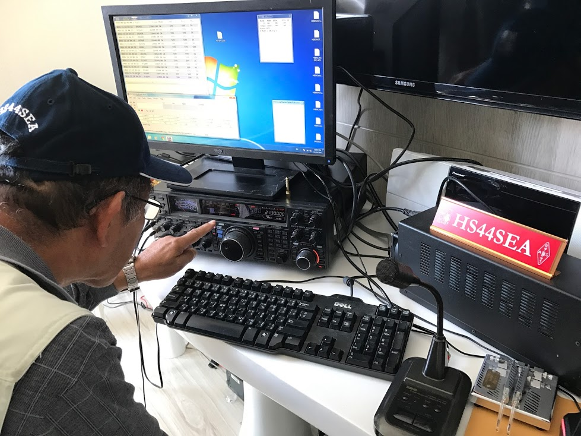

SEANET記念局・HS44SEA /右は13階の屋上に建てられたANT
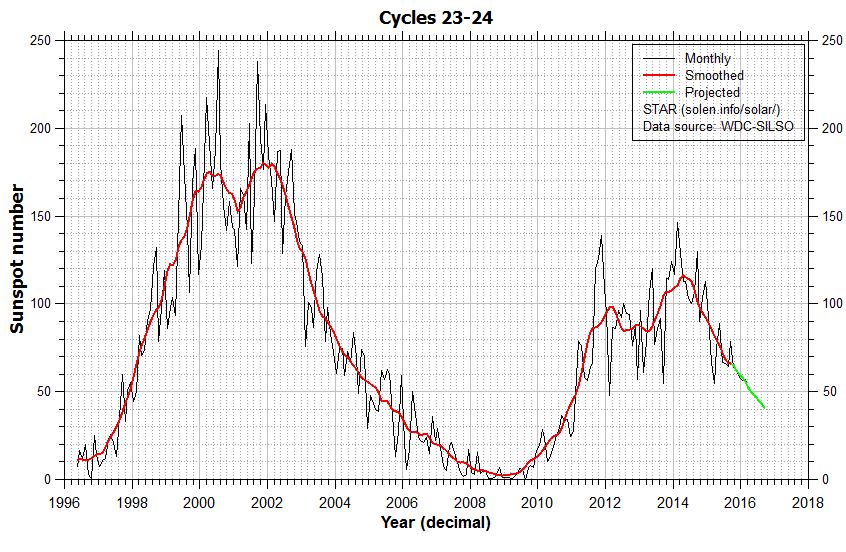
| ◎2016年末の6mのコンデションは、”サイクル24”の最低期に向かっている時期とは言え、 全くDXからの入感も無く終わってしまった。 過去の記録では、サイクルの最低期でも年末から年始にかけてTEPによる、短いVK/ZLのオープン があったが、2016年の暮れは全く落ち込んだままだった。 サイクル24の最低期に向けて更に降下するので、年が明けも目だったコンデションの上昇は期待 は出来ない？。 |
[Back Issues.2016] TIME:UTC(JST-09:00) Report from JA1RJU(PM95sq) 30.Dec.2016(15:00b) Report from JA1RJU(PM95sq) 29.Dec.2016(15:00b) Report from JA1RJU(PM95sq) 27.Dec.2016(15:00b) Report from JA1RJU(PM95sq) 26.Dec.2016(15:00b) Report from JA1RJU(PM95sq) 25.Dec.2016(15:00b) Report from JA1RJU(PM95sq) 24.Dec.2016(15:00b) Report from JA1RJU(PM95sq) 23.Dec.2016(15:00b) Report from JA1RJU(PM95sq) 22.Dec.2016(15:00b) Report from JA1RJU(PM95sq) 21.Dec.2016(15:00b) Report from JA1RJU(PM95sq) 20.Dec.2016(15:00b) Report from JA1RJU(PM95sq) 19.Dec.2016(15:00b) Report from JA1RJU(PM95sq) 18.Dec.2016(15:00b) Report from JA1RJU(PM95sq) 17.Dec.2016(15:00b) Report from JA1RJU(PM95sq) 16.Dec.2016(15:00b) Report from JA1RJU(PM95sq) 15.Dec.2016(15:00b)Report from JA1RJU(PM95sq) 14.Dec.2016(15:00b) Report from JA1RJU(PM95sq) 13.Dec.2016(15:00b) Report from JA1RJU(PM95sq) 12.Dec.2016(15:00b) VK6KXW 06:17 50.276+0.272 WSJT JT65a CQ -23dB(OF87) OZ1DJJ 14:41 50.185.0 WSJT JT65a EME -28dB (into JG2) Report from JA1RJU(PM95sq) 11.Dec.2016(15:00c) VK5PO 04:23 50.276-0.320 WSJT JT65a CQ -14dB(PF95) VK5PO 04:33 50.276.0 WSJT JT65a CQ -06dB (into JA5) VK4EM 04:34 50.276.0 WSJT JT65a CQing -22dB (into JA5) SM0NKZ 13:49 50.185.0 WSJT JT65a EME -19dB (into JG2) ZL2DX 14:59 50.195.0 WSJT JT65a EME CQing -25dB (into JG2) F5LNU 15:12 50.189.0 WSJT JT65a EME CQing -26dB (into JG2) Report from JA1RJU(PM95sq) 10.Dec.2016(15:00d) ZL4LV 06:13 50.276 WSJT JT65a -15dB (QSO with JA5FFJ) ZL4LV 07:43 50.276-0.016 WSJT JT65a -23dB (QSO with JK7=QM08) ZL4LV 07:45 50.276-0.013 WSJT JT65a -18dB (QSO with JK7) ZL4LV 07:51 50.276+0.320 WSJT JT65a CQ -22dB(RE54) ZL4LV 07:55 50.276+0.320 WSJT JT65a -22dB (QSO with JA? "RRR TU 73") SM6LPF 13:29 50.191 WSJT JT65a EME -23dB (into JG2) S51DI 13:36 50.191 WSJT JT65a EME -28dB (into JG2) I6WJB 14:16 50.191 WSJT JT65a EME -28dB (into JG2) F5LNU 15:08 50.189 WSJT JT65a EME -23dB (CQ into JG2)
◎6mでアクティブにQRVして多くのJA局にお馴染みだったVK4ZJB/JOHNのSK(死去)が15日、VK4AMG/Georgeから伝えられた(下記参照)。 今年の春のVK入感のシーズンもVK4ZJBの強力なSSBの信号が50.110MHzで聞こえていた。 Johnは1960年5月24日からVK4ZJBのコールサインでQueensland(QG62)からQRV、6mでVK4から初の6mのDXCC(MIX)も受領しているアクティブ局だった。 Johnは1988年から10年間、”VK4KK”のコールサインで28MHzのCW/SSBでもQRVしていました。ご冥福をお祈りします。
It is with deep regret that I advise the passing of John VK4ZJB. John was a keen 6m operator active from Brisbane for over 30 years and then recently (10 years or so) from Gympie, Queensland. I have attached some notes I have prepared for a SK notice in the WIA Amateur Radio magazine. As John was well know amongst JA 6m operators, please advise his passing in your magazine. He will be sadly missed. Vy 73 George VK4AMG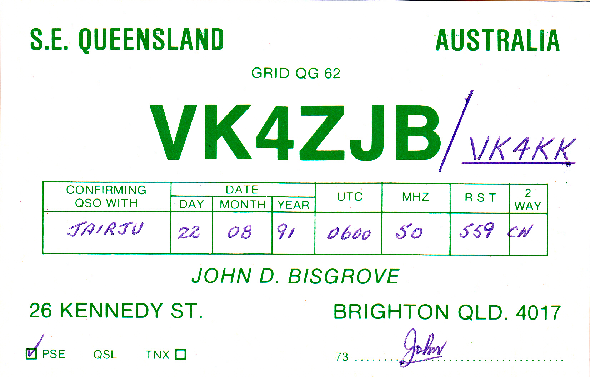
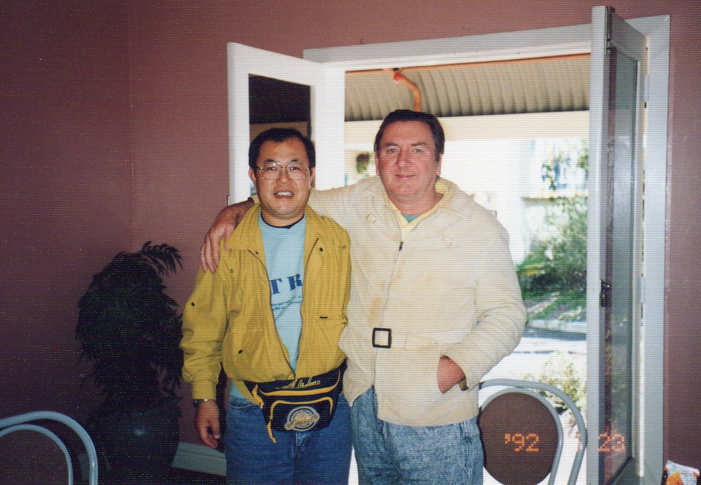
SKが報じられたVK4ZJBのQSL/JH1WHS・加藤さんが訪問した際のJohn(右)Report from JA1RJU(PM95sq) 09.Dec.2016(15:00c) F5LNU 13:42 50.189 ESJT JT65a EME -26dB (CQ into JG2) Report from JA1RJU(PM95sq) 08.Dec.2016(15:00d) VK7XX 04:24 50.276+0.519 WSJT JT65a -05dB (QSO with VK4ZB) VK7XX 04:28 50.276+0.560 WSJT JT65a -07dB (Call to JR2) VK7XX 04:30 50.276+0.552 WSJT JT65a -07dB (QSO with JR2) ZL2DX 04:33 50.276+0.541 WSJT JT65a -08dB (Call to JR2) VK7BO 04:36 50.276-0.188 WSJT JT65a -10dB (QSO with VK4XJB) VK7BO 04:38 50.276+0.188 WSJT JT65a -10dB (QSO with VK4XJB) ZL2DX 04:39 50.276+0.272 WSJT JT65a -06dB (Call to JA3) VK7BO 04:40 50.276-0.188 WSJT JT65a -08dB (QSO with VK4XJB) ZL2DX 04:41 50.276+0.272 WSJT JT65a -04dB (QSO with JA3) VK7BO 04:42 50.276-0.417 WSJT JT65a -09dB (QSO with VK5PO) ZL2DX 04:45 50.276+0.275 WSJT JT65a -08dB (Call to JA3) ZL2DX 04:47 50.276+0.275 WSJT JT65a -05dB (QSO with JA3) VK7BO 04:50 50.276-0.178 WSJT JT65a -17dB (Call to VK4ZB) S57RR 12:42 50.193 WSJT JT65a EME -27dB (into JG2) UR0MC 14:17 50.191 WSJT JT65a EME -23dB (into JG2)
◎関東地方は午前中から強い北風が吹き込み、都心部でも14mを超える冷たい強風が観測され、いよいよ”冬将軍”の到来となった。 Report from JA1RJU(PM95sq) 07.Dec.2016(15:00b) S57RR 13:01 50.193 WSJT JT65a EME -25dB (into JG2)
◎昨日、南半球のパスは”期待出来ない？”とリポートした途端に、今日は午後から久しぶりにVK7/ZL2の入感が確認され、6mバンドの”気まぐれ”オープンが証明された？。オープンしたエリアは狭く、時間も30分程度と短いものだった。 Report from JA1RJU(PM95sq) 06.Dec.2016(15:00b) Report from JA1RJU(PM95sq) 05.Dec.2016(15:00b) Report from JA1RJU(PM95sq) 04.Dec.2016(15:00b) Report from JA1RJU(PM95sq) 03.Dec.2016(15:00b) Report from JA1RJU(PM95sq) 02.Dec.2016(15:00b) Report from JA1RJU(PM95sq) 01.Dec.2016(15:00b)
◎12月に入って早くも一週間。6mのコンデションはサイクル24の低下と共に全く落ち込んだまま。南半球は今が夏のEsシーズンの真っ最中で、VK/ZL同士のQSOがクラスターに頻繁にリポートされているが、TEPでの南北のパスはこの時期には期待出来ない？。
[Back Issues Nov.2016]
TIME:UTC(JST-09:00)
Report from JA1RJU(PM95sq)
30.Nov.2016(15:00b)
Report from JA1RJU(PM95sq)
29.Nov.2016(15:00b)
Report from JA1RJU(PM95sq)
28.Nov.2016(15:00b)
Report from JA1RJU(PM95sq)
27.Nov.2016(15:00c)
ZL1HD 03:06 50.276+0.552 WSJT JT65a -09dB (QSO with VK4UH)
ZL1HD 03:08 50.276+0.552 WSJT JT65a -20dB (QSO with VK4UH)
ZL1HD 03:10 50.276+0.552 WSJT JT65a -20dB (QSO with VK4UH)
KG6JDX 05:23 50.110 SSB CQ DX RS59
Report from JA1RJU(PM95sq)
26.Nov.2016(15:00c)
VK5BC 04:53 50.276+0.229 WSJT JT65a -23dB (calling JA2)
VK5BC 04:55 50.276+0.229 WSJT JT65a -23dB (calling JA2)
Report from JA1RJU(PM95sq)
25.Nov.2016(15:00b)
Report from JA1RJU(PM95sq)
24.Nov.2016(15:00c)
◎東日本に寒波が襲った24日は各地で記録的な降雪による影響を与えた。関東地方でも深夜から降り出した雨が明け方6時頃から雪に変わり、東京では午前9時頃には気温が0.9度まで下がり、真冬並みの冷え込みとなった。降雪量は少なかったものの東京地方での11月の初雪は54年(1962年以来)ぶり。また11月に東京で積雪が記録されたのは観測史上初となった。
Report from JA1RJU(PM95sq)
23.Nov.2016(15:00b)
Report from JA1RJU(PM95sq)
22.Nov.2016(15:00b)
◎早朝05:59時に福島沖を震源とする”M7.4”の地震が発生。福島、宮城、岩手などを中心に東北地方から、茨城、千葉など関東の太平洋沿岸、伊豆諸島で弱い津波が確認された。宮城県下で1.4mを超える津波も確認されたが、幸い人的な被害は無く、午後には津波警報も解除された。
この朝、タイ国で開催されていた「SEANET」に参加して、帰国した直後の羽田空港(0540時着)での”地震”の出迎えには驚かされた。
Report from JA1RJU(PM95sq)
18-21.Nov.2016(15:00b)
◎44th SEANET Convention Pattaya Thailand (November 18-21, 2016)
Hosted by ”The Radio Amateur Society of Thailand HS44SEA”
◎恒例の「第44回・SEANET」コンベンションに11/17-11/22日のスケジュールで参加して来ました。今年の大会は、200７年の第35回以来9年ぶりのタイ国での開催で、バンコクから南に約160Km離れた海岸沿いにあるリゾート地のパタヤ（PATTAYA）で行われました。
開催直前の10月13日に、タイ国のピムポン国王が亡くなられ、国民は一ヶ月の“喪に服する”事になり、SEANETの参加者にも黒系の服装での参加要請があり、指示通りに暑い東南アジアには似つかない“黒色の装い”で出かけました。
大会のセミナーでは、タイ国から50MHzで初QRVして、多くのJAにDXCC NEWをプレゼントしてくれたHS1WR・故カムチャイ（Kamchai Chotikul）氏のXYLのHS1YL(Mrs Mayuree Chotikul)さんの「A brief history of SEANET in Thailand」と題しての講演があり、第2回のタイ国(Bangkok)でのSEANETの開催から、今回で10回目となるタイ国での開催の歴史が紹介されました。(De JA1RJU)

Report from JA1RJU(PM95sq)
18.Nov.2016(15:00c)
W5ADD 12:39 50.193 JT65a EME QSO -22dB JR2)
KG7H 15:09 50.193 JT65a EME QSO -24dB JR2)
Report from JA1RJU(PM95sq)
17.Nov.2016(15:00b)
Report from JA1RJU(PM95sq)
16.Nov.2016(15:00b)
Report from JA1RJU(PM95sq)
15.Nov.2016(15:00b)
W5ADD 10:40 50.193 JT65a EME QSO -25dB JR6)
UR0MC 18:12 50.201 JT65a EME QSO -25dB JR6)
Report from JA1RJU(PM95sq)
14.Nov.2016(15:00c)
S59A 16:28 50.191 JT65a EME QSO -22dB JR6)
PA3HP 16:51 50.191 JT65a EME QSO -25dB JR2)
PA3HP 17:13 50.191 JT65a EME QSO -24dB JR6)
Report from JA1RJU(PM95sq)
13.Nov.2016(15:00b)
Report from JA1RJU(PM95sq)
12.Nov.2016(15:00b)
Report from JA1RJU(PM95sq)
11.Nov.2016(15:00b)
Report from JA1RJU(PM95sq)
10.Nov.2016(15:00b)
Report from JA1RJU(PM95sq)
09.Nov.2016(15:00b)
◎ZLの入感があった昨日とは打って変わって6mのコンデションは終日落ち込んだまま。関東地方にも午後から”木枯らし一号”が吹き、東京都心でも風速15.5mの北からの冷たい強風が記録された。
Report from JA1RJU(PM95sq)
08.Nov.2016(15:00c)
ZL2WHO/B 05:47 50.024.0 CW Beacon
ZL3NW 05:48 50.110 CW into JA2
ZL1SG 05:49 50.115 CW
ZL3NW 05:57 50.099 CW CQ into JA5
ZL3NW 06:03 50.100 CW into JA5
ZL1SWW 06:04 50.110 CW
ZL1RQ 06:06 50.110 CW
ZL1WPS 06:09 50.110 SSB into JA6
Report from JA1RJU(PM95sq)
07.Nov.2016(15:00b)
Report from JA1RJU(PM95sq)
06.Nov.2016(15:00b)
Report from JA1RJU(PM95sq)
05.Nov.2016(15:00d)
VK4BLK 05:10 50.276+0.234 WSJT JT65a CQ -05dB
VK4BLK 05:14 50.276+0.231 WSJT JT65a -05dB (QSO with JR2)
VK4BLK 05:20 50.276-0.172 WSJT JT65a CQ -08dB
VK4BLK 05:22 50.276-0.172 WSJT JT65a -04dB (QSO with JK7)
VK4BLK 05:28 50.276-0.549 WSJT JT65a -08dB (QSO with JA5)
VK4BLK 06:16 50.276+0.490 WSJT JT65a CQ -14dB
VK4BLK 06:22 50.276+0.484 WSJT JT65a CQ -11dB
↓ ↓ ↓ ↓
VK4BLK 06:31 50.276+0.487 WSJT JT65a CQ -21dB
VK4BLK 06:38 50.276+0.479 WSJT JT65a CQ -17dB
VK4BLK 06:42 50.276+0.479 WSJT JT65a CQ -10dB
VK4BLK 06:44 50.276+0.482 WSJT JT65a -14dB (QSO with JM1)
Report from JA1RJU(PM95sq)
04.Nov.2016(15:00d)
ZL1RQ 03:37 50.110 CW CQ
ZL1RQ 03:38 50.110 CW @ RST599
ZL1RQ 03:42 50.110 SSB @ RS59
ZL1RQ 03:50 50.130 SSB QSY CQ CQ
ZL1NX 04:02 50.110 CW @ RST599
ZL1RQ 03:05 50.110 SSB CQ CQ
◎今季初めてZLの入感があった。正午過ぎに50.110MHzで突然ZL1RQのCQがRST 599で入感、東京西部では強力だったが地域性があったのか千葉、埼玉の一部ではピークでもRST559程度の信号だったとのこと。JAからはJA2-JA6エリアからもコールしていたが、ZL1RQが50.130MHzにQSYした後に、50.110MHzでCQを出していたZL1NXにはJA1から応答しただけ？。
同時間帯にJA5で入感していたWSJTのVK4はJA1では確認出来なかったのと、ZLからのBeaconも聞こえなかったので、ZL/VKとも広範囲ではなくスポット的にオープンしていたとものと思われる。
Report from JA1RJU(PM95sq)
03.Nov.2016(15:00c)
V73SIX/B 02:50- 50.011.5 CW Beacon
Report from JA1RJU(PM95sq)
02.Nov.2016(15:00b)
Report from JA1RJU(PM95sq)
01.Nov.2016(15:00c)
VK4WTN 04:08 50.276-0.258 WSJT JT65a CQ -09dB
VK4WTN 04:10 50.276-0.027 WSJT JT65a -04dB (QSO with JA1)
[Back Issues Oct.2016]
TIME:UTC(JST-09:00)
Report from JA1RJU(PM95sq)
31.Oct.2016(00:00a)
Report from JA1RJU(PM95sq)
30.Oct.2016(15:00b)
Report from JA1RJU(PM95sq)
29.Oct.2016(15:00d)
DU1EV/B 05:00- 50.007.9 CW Beacon RST599
DU7/PA0HIP 05:04 50.276-0.385 WSJT JT65a -08dB (QSO with JA1)
DU7/PA0HIP 05:18 50.276-0.140 WSJT JT65a -10dB (QSO with JA5)
DU7/PA0HIP 05:31 50.276-0.183 WSJT JT65a CQ -08dB
DU7/PA0HIP 05:38 50.276-0.160 WSJT JT65a -10dB (QSO with JA1)
VK4WTN 05.44 50.276-0.057 WSJT JT65a CQ -19dB
VK4WTN 05:46 50.276-0.057 WSJT JT65a CQ -18dB
VK4WTN 05:53 50.276-0.054 WSJT JT65a CQ -17dB
VK4WTN 05:57 50.276-0.059 WSJT JT65a -18dB (QSO with JH5)
VK4WTN 06:09 50.276-0.059 WSJT JT65a CQ -14dB
◎英国のDX-GroupのFSDXAのメンバーによる「Six Gs Chatham Island DX-pedition」がスタートした。今回の運用予定は、26.Oct-09.Nov.2016。オペレーターはRSGB会長のG3BJ他、G3SVL、G3TXF、G3WPH、G3XTT(CDXA会長)、G4JKS、G4TSH。
28MHzでも良く入感していて、日中はJAのパイルとなっていてもQSOは難しくない。今のところ6mでの運用は予定されていないのが残念！。
(Chatham Islands=QSL: G3TXF)
Report from JA1RJU(PM95sq)
28.Oct.2016(15:00b)
Report from JA1RJU(PM95sq)
27.Oct.2016(15:00d)
VK6KXW 05:13 50.276-0.276 WSJT JT65a -13dB (QSO with JA5)
VK6KXW 05:19 50.276-0.619 WSJT JT65a CQ -13dB
VK6KXW 05:21 50.276-0.276 WSJT JT65a -12dB (QSO with JA3)
T88AX 06:25 50.276-0.412 WSJT JT65a -06dB (QSO with JA2)
T88AX 06:29 50.276-0.409 WSJT JT65a -06dB (QSO with JA1)
↓ ↓ ↓ ↓
T88AX 06:41 50.276-0.415 WSJT JT65a -06dB (QSO with JA1-5)
T88AX 06:53 50.276-0.415 WSJT JT65a CQ -12dB
Report from JA1RJU(PM95sq)
26.Oct.2016(15:00d)
(JA6YBR/b 04:00- 50.017 CW Beacon Es JA6"s)
6L0NJ/B 05:40- 50.051 CW Beacon
VK6KXW 06:21 50.276-0.145 WSJT JT65a -14dB (QSO with JA5)
T88AX 06:31 50.276-0.016 WSJT JT65a CQ -04dB (PJ77)
↓ ↓ ↓ ↓
T88AX 06:35 50.276-0.016 WSJT JT65a CQ -06dB
T88AX 06:39 50.276-0.016 WSJT @ JT65a -04dB/-09bD (50W QSO)
T88AX 07:17 50.276-0.019 WSJT JT65a CQ -07dB
↓ ↓ ↓ ↓
T88AX 07:27 50.276-0.019 WSJT JT65a -07dB (QSO with JA1-9's)
DU7/PA0HIP 07:27 50.110 CW CQ CQ RST599
T88AX 07:31 50.276-0.019 WSJT JT65a -03dB (QSO with JA1)
VK8VF/b 07:40- 50.310 CW Beacon
T88AX 07:47 50.276-0.019 WSJT JT65a -03dB (QSO with JA1)
T88AX 07:53 50.276-0.016 WSJT JT65a -05dB (QSO with JA1)
Report from JA1RJU(PM95sq)
25.Oct.2016(15:00b)
Report from JA1RJU(PM95sq)
24.Oct.2016(15:00b)
Report from JA1RJU(PM95sq)
23.Oct.2016(15:00b)
Report from JA1RJU(PM95sq)
22.Oct.2016(15:00b)
Report from JA1RJU(PM95sq)
21.Oct.2016(15:00b)
Report from JA1RJU(PM95sq)
20.Oct.2016(15:00b)
Report from JA1RJU(PM95sq)
19.Oct.2016(15:00d)
KG6DX 06:11 50.276+0.196 WSJT JT65a CQ -08dB
KG6DX 06:15 50.276+0.196 WSJT JT65a CQ -08dB
(S59A 21:16 50.192.0 WSJT JT65a -21dB (JR6EXN EME QSO)
(F8GGD 21:06 50.192.0 WSJT JT65a -22dB (JR6EXN EME QSO)
Report from JA1RJU(PM95sq)
18.Oct.2016(15:00c)
VK4BLK 04:24 50.276+0.242 WSJT JT65a CQ -04dB
VK4BLK 04:28 50.276+0.261 WSJT JT65a CQ -05dB
VK4BLK 04:46 50.276-0.216 WSJT JT65a -05dB (QSO with JA2)
VK4BLK 04:50 50.276-0.450 WSJT JT65a -08dB (QSO with JA5)
VK4BLK 05:10 50.276 WSJT @ JT65a -05dB/-01dB (10W QSO)
VK4BLK 05:32 50.276+0.358 WSJT JT65a CQ -05dB
Report from JA1RJU(PM95sq)
17.Oct.2016(15:00b)
Report from JA1RJU(PM95sq)
16.Oct.2016(15:00c)
V73SIX/B 03:55- 50.011.5 CW Beacon
VK4UH 05:15 50.276+0.043 WSJT JT65a -08dB (QSO with JA5)
VK4WTN 05:22 50.276-0.237 WSJT JT65a -16dB (QSO with JA5)
VK4CZ 05:28 50.276+0.038 WSJT JT65a -06dB (QSO with JA5)
VK4WTN 05:36 50.276-0.240 WSJT JT65a CQ -17dB
VK4WTN 05:38 50.276-0.240 WSJT JT65a CQ -11dB
VK4WTN 05:41 50.276-0.425 WSJT JT65a -18dB (QSO with JA3)
VK4UH 05:48 50.276+0.229 WSJT JT65a -05dB (QSO with JA1)
VK4WTN 05:53 50.276-0.425 WSJT JT65a -09dB (QSO with JA1)
VK4UH 05:54 50.276+0.226 WSJT JT65a -08dB (QSO with JA2)
VK4WTN 06:00 50.276-0.057 WSJT JT65a -12dB (QSO with JA2)
Report from JA1RJU(PM95sq)
15.Oct.2016(15:00d)
V73SIX/B 05:10- 50.011.5 CW Beacon weak
V73SIX/B 05:45- 50.011.5 CW Beacon RST579
HL5/VK6JJJ 09:29 50.276 WSJT JT65a CQ -06dB
Report from JA1RJU(PM95sq)
14.Oct.2016(15:00b)
Report from JA1RJU(PM95sq)
13.Oct.2016(15:00b)
Report from JA1RJU(PM95sq)
12.Oct.2016(15:00c)
V73SIX/B 04:40- 50.011.5 CW Beacon weak
VK4BLK 06:06 50.276-0.272 WSJT JT65a CQ -19dB
VK4BLK 06:12 50.276-0.269 WSJT JT65a CQ -23dB
Report from JA1RJU(PM95sq)
11.Oct.2016(15:00c)
VK6RSX/b 06:35- 50.304 CW Beacon RST559 QSB
Report from JA1RJU(PM95sq)
10.Oct.2016(15:00c)
V73SIX/B 03:35- 50.011.5 CW Beacon weak
V73SIX/B 05:25- 50.011.5 CW Beacon RST599
◎今日はV73SIX/Bが強力に入感していた。そろそろ午後からのVKが聞こえ出しても良い季節なのだが、今年はあまり50.280-300MHzのBEACONは確認出来なかった。遅い時間帯に西日本でVK6/8のBEACONの入感がリポートされているが北日本では聞こえていない。
Report from JA1RJU(PM95sq)
09.Oct.2016(15:00b)
●第37回全市・全郡コンテスト
Report from JA1RJU(PM95sq)
08.Oct.2016(15:00b)
●第37回全市・全郡コンテスト
Report from JA1RJU(PM95sq)
07.Oct.2016(15:00b)
Report from JA1RJU(PM95sq)
06.Oct.2016(15:00c)
◎西日本各地に大きな被害を与えた台風18号は山陰沖を通過後、熱帯低気圧に変わったが、強風エリアを残したまま東進、能登半島を通過し東北地方を横断、北海道南東へ抜けた。日本海を通過時の零時頃には北陸金沢市で風速43mを超える強風を記録した。この時間帯に関東エリアでも短時間ながら強風の影響を受けた。6日の午前中は関東地方は"台風一過"の晴れとなって東京都心では気温も32度を超える”真夏日”となっている。
Report from JA1RJU(PM95sq)
05.Oct.2016(15:00c)
|
◎10月4-5日に沖縄本島・久米島などに大きな被害を与えた台風18号が、南シナ海から対馬沖を通過、韓国南部に上陸後、日本本土上空の偏西風に乗ってスピードを上げながら日本海を北上している。台風はこの後、北日本を横断して太平洋に抜けるコースが予想されている。今回の台風18号は”風”台風の模様で大きな強風域を伴っており、日本海を通過時には関東エリアでも強風の影響を受けそう。関東・甲信に影響が出るのは5日夜半と予想されている。 台風に備え今回もアンテナを降ろして被害が及ぶのを避けているものの、今年は例年になく台風が本土に上陸するため”クランクアップ/ダウン”で台風対策で忙しい一年と成っている。 |
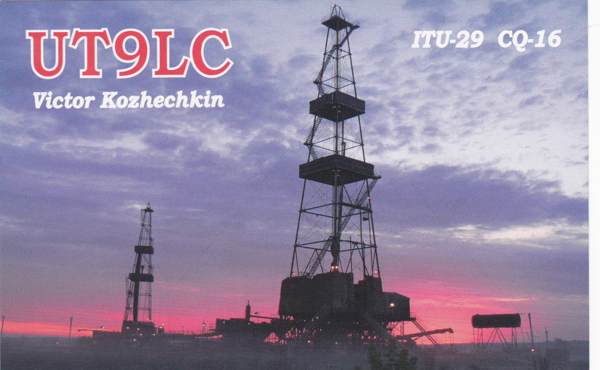
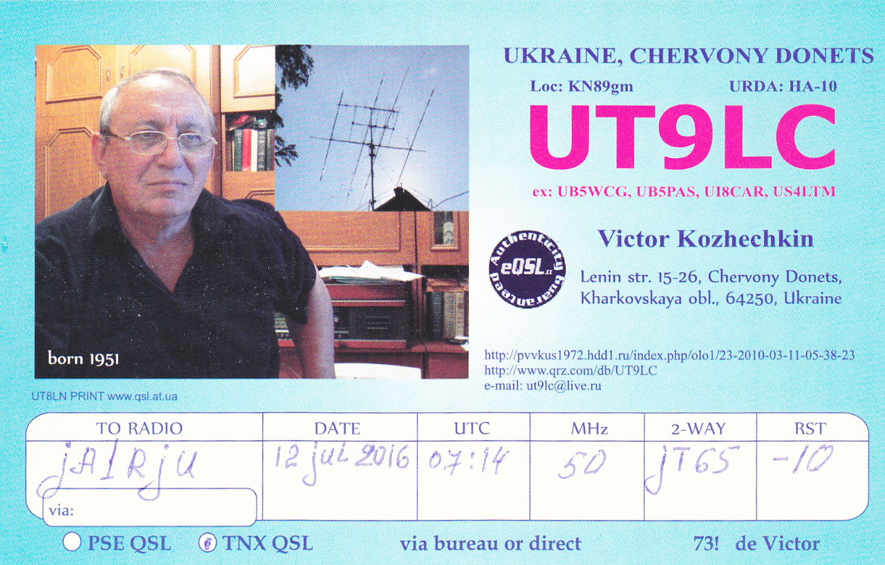


2016年の夏にWSJT(JT65a)でアクティブにQRVしていたUN7TW
Report from JA1RJU(PM95sq)
04.Oct.2016(15:00b)
Report from JA1RJU(PM95sq)
03.Oct.2016(15:00d)
V73SIX/B 05:45- 50.011.5 CW Beacon weak
KG6DX 06:05 50.276-0.058 WSJT JT65a CQ -20dB
KG6DX 06:07 50.276 WSJT JT65a -12dB (QSO with JA5)
KG6DX 06:23 50.276 WSJT@ JT65a -05dB/-01dB (20W QSO)
VK6RSX/b 06:35- 50.304 CW Beacon
KG6DX 06:45 50.276+0.526 WSJT JT65a -09dB (QSO with JA1)
DU1EV/B 07:10- 50.007.9 CW Beacon
Report from JA1RJU(PM95sq)
02.Oct.2016(15:00b)
Report from JA1RJU(PM95sq)
01.Oct.2016(15:00b)
[Back Issues Sep.2016]
TIME:UTC(JST-09:00)
Report from JA1RJU(PM95sq)
30.Sep.2016(15:00b)
Report from JA1RJU(PM95sq)
29.Sep.2016(15:00b)
Report from JA1RJU(PM95sq)
28.Sep.2016(15:00b)
Report from JA1RJU(PM95sq)
27.Sep.2016(15:00b)
Report from JA1RJU(PM95sq)
26.Sep.2016(15:00c)
DU1EV/B 10:00- 50.007.9 CW Beacon
Report from JA1RJU(PM95sq)
24-25.Sep.2016(15:00b)
◎6SG=山形(東北6mグループ)のミーティング参加のためDX-Reportはお休みしました。
|
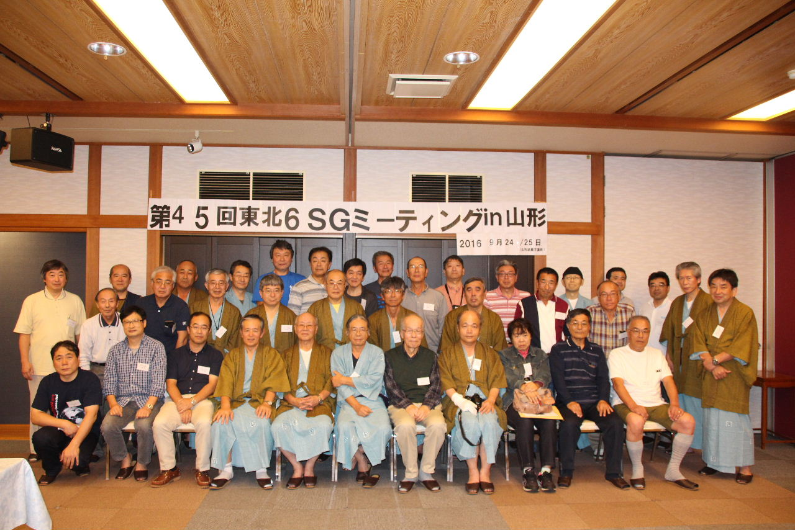 2016年6SG-Meeting・山形 (詳細:Flash News参照) |
Report from JA1RJU(PM95sq)
23.Sep.2016(15:00c)
VK4BLK 06:31 50.276-0.258 WSJT JT65a CQ -22dB
VK4BLK 06:35 50.276-0.261 WSJT JT65a -16dB (QSO with JA2)
VK4BLK 06:43 50.276-0.261 WSJT JT65a CQ -25dB
DU1EV/B 08:40- 50.007.9 CW Beacon RST599++
DU7/PA0HIP 08:45 50.105 CW CQ
DU1EV/B 09:10- 50.007.9 CW Beacon RST599
Report from JA1RJU(PM95sq)
22.Sep.2016(15:00c)
N7ET/DU7 08:20 50.105 CW
DU1EV/B 08:20- 50.007.9 CW Beacon RST599++
N7ET/DU7 08:25 50.105 CW CQ CQ
Report from JA1RJU(PM95sq)
21.Sep.2016(15:00c)
DK7GG/DU6 08:02 50.276-0.476 WSJT JT65a CQ -07dB(PK10)
DK7GG/DU6 08:10 50.276 WSJT@ JT65a -05dB/-03dB (20W QSO)
DU1EV/B 08:20- 50.007.9 CW Beacon RST599++
DK7GG/DU6 08:35 50.276-0.046 WSJT JT65a CQ -03dB
|
◎関東直撃が心配された昨夜の台風16号は、東海地方を通過後に急速に衰退”熱帯低気圧”となり、東京都西部ではほとんど風の影響も無く消滅した。幸いに強風による被害は無かったものの、関東地方でも豪雨の影響で各地に大きな被害を与えた。
本土付近に”秋雨前線”が停滞しているため、今日は台風一過の晴天とはならず、肌寒い曇天となっている。 夕方からWSJTで入感していたDK7GG/DU6は、一昨日に続いて強力。 |
Report from JA1RJU(PM95sq) 20.Sep.2016(15:00c)
| ◎今年に入って6個目の日本上陸となった台風16号は、九州・鹿児島の大隅半島に上陸した後、四国沖を通過、和歌山県に再上陸、北上を続けている。東海地方を通過後、深夜には関東・甲信地方に最接近となる予想。九州、四国、関東までの広い範囲に豪雨の被害をもたらしている台風16号だが、”強風域”の広い台風に備え、われわれは"アンテナを降ろし"無事な通過を祈るだけ。 |
Report from JA1RJU(PM95sq)
19.Sep.2016(15:00c)
DU7/PA0HIP 07:55 50.105 CW
DK7GG/DU6 08:27 50.276-0.350 WSJT JT65a CQ -11dB
DK7GG/DU6 08:37 50.276+0.390 WSJT JT65a -19dB (QSO with JA4)
DU1EV/B 08:45- 50.007.9 CW Beacon RST599
DK7GG/DU6 08:49 50.276+0.022 WSJT JT65a -14dB (QSO with JA3)
DK7GG/DU6 09:09 50.276+0.374 WSJT JT65a -08dB (QSO with JA3)
Report from JA1RJU(PM95sq)
18.Sep.2016(15:00b)
Report from JA1RJU(PM95sq)
17.Sep.2016(15:00b)
Report from JA1RJU(PM95sq)
16.Sep.2016(15:00d)
VK4BLK 07:06 50.276-0.261 WSJT JT65a CQ -16dB
VK4BLK 07:17- 50.276 WSJT@ JT65a -05dB/-01dB (10W QSO)
VK4BLK 07:35 50.276-0.250 WSJT JT65a CQ -03dB
VK4WTN 07:53 50.276-0.127 WSJT JT65a CQ -11dB (100W 7EL)
VK4WTN 08:05 50.275.990 WSJT@ JT65a -09dB/-19dB (20W QSO)
DU1EV/B 09:00- 50.007.9 CW Beacon RST599
Report from JA1RJU(PM95sq)
15.Sep.2016(15:00b)

 7/3の朝にJAから初QSOに成功したJW7QIA(QSL提供＝JA7QVI) |
Report from JA1RJU(PM95sq)
14.Sep.2016(15:00b)
Report from JA1RJU(PM95sq)
13.Sep.2016(15:00c)
DU1EV/B 07:30- 50.007.9 CW Beacon RST599
DU7/PA0HIP 07:50 50.105 CW RST 599++
6L0NJ/B 09:10- 50.051 CW Beacon
(JA6YBR/b 09:10- 50.017 CW Beacon Miyazaki)
Report from JA1RJU(PM95sq)
12.Sep.2016(15:00c)
VK6RSX/b 09:20- 50.304 CW Beacon QSB
Report from JA1RJU(PM95sq)
11.Sep.2016(15:00c)
6L0NJ/B 09:20- 50.051 CW Beacon
Report from JA1RJU(PM95sq)
10.Sep.2016(15:00c)
VK6RSX/b 09:30- 50.304 CW Beacon RST579 QSB
|
◎連続して日本列島に豪雨の被害をもたらしていた台風も一段落、関東地方も蒸し暑い天候が戻ってきたが、秋雨前線の影響で来週は天候は安定しない。 6mのコンデションはEsシーズンも低下、秋型に向かいつつある。今日は夕方からVK6RSX(OG89)のBeaconが強力に入感していた。いよいよ本格的にVKの入感のシーズンを迎える。 |
Report from JA1RJU(PM95sq) 09.Sep.2016(15:00b) Report from JA1RJU(PM95sq) 08.Sep.2016(15:00b) Report from JA1RJU(PM95sq) 07.Sep.2016(15:00b) Report from JA1RJU(PM95sq) 06.Sep.2016(15:00b) Report from JA1RJU(PM95sq) 05.Sep.2016(15:00b) Report from JA1RJU(PM95sq) 04.Sep.2016(15:00b) Report from JA1RJU(PM95sq) 03.Sep.2016(15:00b) Report from JA1RJU(PM95sq) 02.Sep.2016(15:00b) Report from JA1RJU(PM95sq) 01.Sep.2016(15:00b)
[Back Issues Aug.2016] TIME:UTC(JST-09:00) Report from JA1RJU(PM95sq) 31.Aug.2016(15:00b) Report from JA1RJU(PM95sq) 30.Aug.2016(15:00b)
◎日本近海で発生し南下を続けて迷走していた台風10号は、超大型台風に成長後Uターンして北上、関東、東北地方上陸のコースを取っていたが、 30日の夕方には福島、宮城、岩手の広範囲に大雨の被害を与えながら、宮城県沖合いに接近している。
暴風のエリアは広く、未だに中心部では最大瞬間風速40-50mを保っている。台風はスピード上げて夕方に岩手県大船渡市付近に上陸。今夜には岩手県を通過して青森県から日本海へ抜けるコースが予想されている。
1951年の観測以来、台風が太平洋側から東北地方を直撃するのは”初ルート”となる。
Report from JA1RJU(PM95sq) 29.Aug.2016(15:00c)
◎JF2MBF/JA2FJPのグループによる南太平洋のVP6J（Pitcairn.I)から運用を始めた。
この時期は6mのJA-VP6の伝搬は厳しいが、50.095MHzでBeaconを発射している。
HF/6mのRIGはIC-7300 & IC-706MK2+500AMPでの運用（6mのアンテナはシングル・ループ）。VP6Jの運用は9/3日まで。
▼今後の予定▼
●E51Q（South CooK)=(9/8-9/19)
●E6(Niue=TBA)=(9/20-9/29)
●T2J(Tubalu)=(10/04-10/10)
●3D2GG(Fiji)=(10/10-10/13)
Report from JA1RJU(PM95sq) 28.Aug.2016(15:00c)
◎日本列島の太平洋近海で発生した台風9号、10号、11号の3個の台風は9号、11号は発生直後に関東、東北地方をかすめて北上、北海道に大雨の被害を与え、オホーツク海へ抜けたが、一方で発生直後から南下を続けて迷走していた台風10号は、南大東島付近で勢力を蓄えて超大型台風に成長後、Uターンして北上を始めた。
28日現在伊豆諸島の八丈島の南海上まで接近、現在本土上陸のコースを取っている。予想では太平洋高気圧の辺りを通ってこのまま北上し、関東北部から東北地方への直撃の構え。台風9号は「ハムフェア」終了後の22日の昼過ぎに、関東地方を直撃し被害を与えたが、今回のUターン台風10号は、太平洋上で大型の台風に成長して勢力を保った状態での上陸だけに、今後の動向が心配されている。大荒れの天気になる30日から31日に掛けて”要注意”。
Report from JA1RJU(PM95sq) 27.Aug.2016(15:00b) Report from JA1RJU(PM95sq) 26.Aug.2016(15:00b) Report from JA1RJU(PM95sq) 25.Aug.2016(15:00b) Report from JA1RJU(PM95sq) 24.Aug.2016(15:00b) Report from JA1RJU(PM95sq) 23.Aug.2016(15:00b) Report from JA1RJU(PM95sq) 22.Aug.2016(15:00b)
◎日本列島の太平洋近海で発生した台風9号が22日の昼頃に関東地方を直撃した。 関東に直接上陸した台風は2005年以来11年ぶりとなるが、台風9号は今夜には北関東から福島県に抜ける模様。 関東各地には豪雨と強風による被害が出ている。台風9号と同時に発生した、台風10号は現在四国沖の太平洋上に停滞していて、今後の動きも心配されている。 先週末に東京・有明で開催されていた「ハムフェア-2016」は台風の影響も無く無事に終了した。
UB7Kと同時期に入感していたクリミア(EU-RUSSIA)のR6KAのQSL このQSLの受領で50MHz帯の"DXCC＝200"をコンファーム (QSL＝De JA1RJU)Report from JA1RJU(PM95sq) 21.Aug.2016(15:00b) HAM FAIR 2016 (Ariake Tokyo) Report from JA1RJU(PM95sq) 20.Aug.2016(15:00b) HAM FAIR 2016 (Ariake Tokyo) Report from JA1RJU(PM95sq) 19.Aug.2016(15:00b) Report from JA1RJU(PM95sq) 18.Aug.2016(15:00b) Report from JA1RJU(PM95sq) 17.Aug.2016(15:00b)
◎関東直撃が心配された台風7号は、17日未明に房総半島の東海上をかすめて北上、夕方には北海道に上陸した。 東京西部地域（PM95）では、深夜から明け方に掛けて激しい雨に見舞われたが、心配された強風による被害はなかった。 午前中には”台風一過”となった関東地方の各地では35度を超える猛暑となっている。
8月に入ってEsによるDXの入感は、VR2/HL/BVなどの近場の入感はあるものの、西アジアからEU方面への伝搬は激減に落ち込んだ。 6/7月のヨーロッパ方面のDX入感で、SSN(太陽黒点数)の最低期でも、夏場のEsでDXが楽しめる事が”証明”されたのは貴重な経験だった。 ヨーロッパ方面へのこの伝搬は、今年は例年よりも早めに始まったが”西高東低”のコンデションは相変わらずで、入感エリアに大きな地域差が出た。
いよいよ今週末は東京・有明のビッグサイトで「ハムフェア」が開催される。


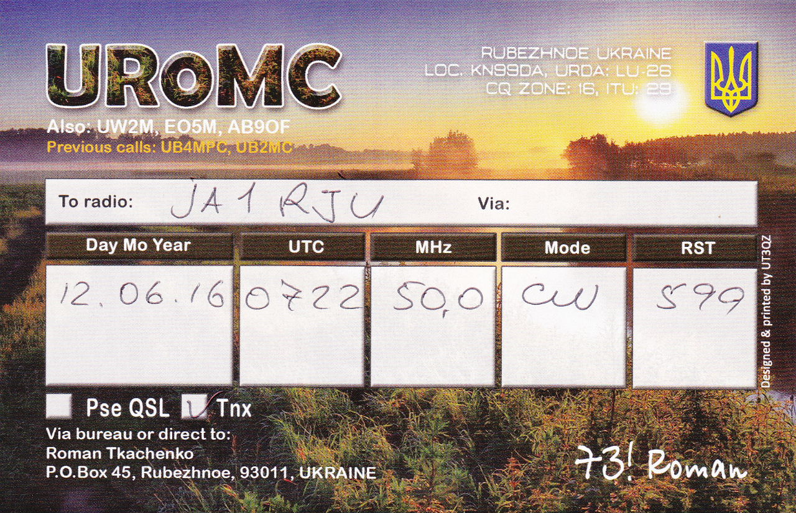
2016年の夏に入感していたアクティブ局
Report from JA1RJU(PM95sq) 16.Aug.2016(15:00b) Report from JA1RJU(PM95sq) 15.Aug.2016(15:00c) HL2ADY 06:09 50.276-0.040 WSJT JT65a CQ -07dB HL2ADY 06:11 50.276-0.040 WSJT JT65a CQ -20dB Report from JA1RJU(PM95sq) 14.Aug.2016(15:00c) BU2BV 23:50 50.276-0.385 WSJT JT65a -10dB QSO with JA4 BU2BV 23:54 50.276-0.388 WSJT JT65a -08dB QSO with JA2 -------------------------------------------------------------- Report from JA1RJU(PM95sq) 13.Aug.2016(15:00c) VR2USJ 06:46 50.102 CW CQ VR2USJ 06:52 50.102 SSB CQ (OP & QSL via JF1RCY) VR2USJ 07:07 50.102 CW @ RST599/599 Report from JA1RJU(PM95sq) 12.Aug.2016(15:00c) DS3CHK 03:06 50.276-0.603 WSJT JT65a CQ -10dB (PM36) DS3CHK 03:08 50.276-0.603 WSJT JT65a CQ -10dB Report from JA1RJU(PM95sq) 11.Aug.2016(15:00c) HL2ADY 08:42 50.276-0.423 WSJT JT65a CQ -07dB HL2ADY 09:23 50.276+0.423 WSJT JT65a CQ -08dB 6L0NJ/B 09:35- 50.051 CW Beacon HL/VK6JJJ 09:51 50.276-0.339 WSJT JT65a -06dB QSO with JA1 Report from JA1RJU(PM95sq) 10.Aug.2016(15:00b) BG2ATH 08:13 50.276-0.552 WSJT JT65a CQ -21dB Report from JA1RJU(PM95sq) 09.Aug.2016(15:00b) Report from JA1RJU(PM95sq) 08.Aug.2016(15:00b) 6L0NJ/B 02:30- 50.051 CW Beacon Report from JA1RJU(PM95sq) 07.Aug.2016(15:00d) EX9T 02:39 50.096 CW CQ CQ FB! EX9T 02:54 50.096 CW CQ again RST599 EX8M 02:56 50.100 CW CQ FB! EX8M 03:22 50.100 CW CQ EX9T 03:30 50.096 CW CQ UN8GC 03:40 50.098 CW CQ EX9T 04:45 50.096 CW CQ BH2RO 05:07 50.276-0.140 WSJT JT65a CQ -11dB BH2RO 05:41 50.276+0.358 WSJT JT65a -08dB QSO with JA9 BH2RO 05:47 50.276-0.649 WSJT JT65a CQ -25dB BH2RO 06:50 50.276-0.248 WSJT JT65a CQ -06dB Report from JA1RJU(PM95sq) 06.Aug.2016(15:00b) Report from JA1RJU(PM95sq) 05.Aug.2016(15:00c) 6L0NJ/B 02:30- 50.051 CW Beacon Report from JA1RJU(PM95sq) 04.Aug.2016(15:00b) Report from JA1RJU(PM95sq) 03.Aug.2016(15:00c) (KL7HBK 22:58 50.276 WSJT JT65a into JA7) ----------------------------------------------------------------- DS3CHK 02:55 50.276-0.663 WSJT JT65a -08dB QSO with JA3 6L0NJ/B 03:00- 50.051 CW Beacon BD4SG 03:19 50.276-0.024 WSJT JT65a CQ -09dB DS3CHK 03:42 50.276-0.420 WSJT JT65a CQ -11dB BD4SG 03:51 50.276-0.503 WSJT JT65a CQ -20dB Report from JA1RJU(PM95sq) 02.Aug.2016(15:00c) 6L0NJ/B 09:50- 50.051 CW Beacon RST599 (Es=JA6) Report from JA1RJU(PM95sq) 01.Aug.2016(15:00c) (AB4B 00:46 50.086 CW into JA7) (NW0W 00:43 50.083 CW into JA7) BH4TYL 01:45 50.276-0.046 WSJT JT65a CQ -11dB BH4TYL 01:49 50.276-0.046 WSJT JT65a CQ -10dB
R6KAと共にRuropean RussiaからアクティブなUB7K
(QSL提供＝JA5FFJ)
[Back Issues Jul.2016] TIME:UTC(JST-09:00) Report from JA1RJU(PM95sq) 31.Jul.2016(15:00d) KL7HBK 22:15 50.275.5 WSJT JT65a QSO with JA1/2 (K0KUK 23:00 50.276 WSJT JT65a -20dB into JA2) KL7HBK 23:48 50.275.5 WSJT JT65a CQ -23dB (BO49) ------------------------------------------------------------------- KL7HBK 00:15 50.275.5 WSJT JT65a inti JA1/2 Report from JA1RJU(PM95sq) 30.Jul.2016(15:00c) (JT1FDB/7 01:25 50.103 CW into JA7) (HL/VK6JJJ 01:27 50.110 CW into JA8) JT1FDB/7 01:40 50.103 CW EX9T 02:18 50.125 SSB JT1ARI/7 02:55 50.103 CW CQ RST599 EX9T 03:00 50.103 CW CQ RST599 EX9T 03:10 50.125 SSB EX8MLT 03:17 50.110 SSB CQ RS59 QSB EX8MLT 03:52 50.110 SSB @ RS59/59 6L0NJ/B 06:30- 50.051 CW Beacon Report from JA1RJU(PM95sq) 29.Jul.2016(15:00c) (B5/BG4TRN 02:24 50.110 CW into JA2) (JT1FDB/7 02:53 50.103 CW into JA7) (B5/BA4TB 05:04 50.110 CW into JA1) Report from JA1RJU(PM95sq) 28.Jul.2016(15:00c) (JT1ARI/7 02:00 50.103 CW CQ into JA6) JT1ARI/7 02:43 50.103 C0W CQ into JA1 Report from JA1RJU(PM95sq) 27.Jul.2016(15:00c) (AJ6T 23:55 50.083 CW into JA7) -------------------------------------------------------------- (K6QXY 00:00 50.083 CW into JA7) (K6KLY 00:04 50.083 CW into JA7) (AL3T 00:07 50.083 CW into JA7. QTH=is in fact using a remote in CM97) (K6FRC/B 00:14 50.080 CW Beacon into JA8) (K6EU 00:15 50.276 WSJT JT65a into JA8) (N6ML 00:22 50.276 WSJT JT65a into JA9) (JT1FDB/7 01:06 50.083 CW into JA7) (KG6DX 02:00 50.102 CW into JA8) JT1FDB/7 03:06 50.103 CW CQ CQ Report from JA1RJU(PM95sq) 26.Jul.2016(15:00c) BD4SG 02:46 50.276-0.140 WSJT JT65a CQ -07dB BD4SG 02:48 50.276-0.143 WSJT JT65a -06dB QSO with JA4 BH4TYL 03:27 50.276-0.137 WSJT JT65a CQ -08dB BH4TYL 03:29 50.276-0.137 WSJT JT65a -08dB QSO with JA1 BH4TYL 03:37 50.276-0.145 WSJT JT65a CQ -08dB BH4TYL 03:57 50.276-0.143 WSJT JT65a CQ -06dB BH4TYL 04:03 50.276-0.140 WSJT JT65a CQ -04dB Report from JA1RJU(PM95sq) 25.Jul.2016(15:00c) BD4SG 05:50 50.276-0.022 WSJT JT65a CQ -16dB BD4SG 06:06 50.276 WSJT @ JT65a -15dB/-11dB (20W QSO) Report from JA1RJU(PM95sq) 24.Jul.2016(15:00d) HL/VK6JJJ 23:34 50.276-0.383 WSJT JT65a CQ -11dB ---------------------------------------------------------------- BH2RO 05:38 50.276-0.234 WSJT JT65a CQ -07dB BH2RO 05:44 50.276-0.230 WSJT JT65a CQ -06dB (BG9GXM 06:32 50.276 WSJT JT65a CQ into JA2) HL2CFY 06:36 50.100 CW CQ CQ (VR2USJ 07:50 50.102 CW into JA7/8) Report from JA1RJU(PM95sq) 23.Jul.2016(15:00d) (KL7HBK 23:02 50.083 CW into JA7) ----------------------------------------------------------- JT1ARI/7 01:12 50.125 CW HL1IBG 02:10 50.107 CW HL2WA 02:15 50.093 RTTY CQ HL1RR 02:21 50.276+0.380 WSJT JT65a -06dB QSO with JA7 DS3CHK 02:22 50.276+0.318 WSJT JT65a CQ -08dB DS3CHK 02:26 50.276 WSJT @ JT65a -08dB/-10dB (20W QSO) HL2ADY 02:36 50.276-0.040 WSJT JT65a CQ -07dB HL4CHH 04:04 50.276-0.250 WSJT JT65a CQ -09dB HL4CHH 04:12 50.276-0.256 WSJT JT65a CQ -08dB BU2BV 04:35 50.276+0.318 WSJT JT65a -19dB QSO with JA3 BH4UTT 04:44 50.276-0.490 WSJT JT65a -07dB QSO with JA3 BH4UTT 04:52 50.276-0.495 WSJT JT65a CQ -13dB (PM02) BH4UTT 04:54 50.276-0.032 WSJT JT65a -21dB QSO with VK6JJJ BU2BV 08:28 50.276+0.086 WSJT JT65a into JA1(PM95) Report from JA1RJU(PM95sq) 22.Jul.2016(15:00c) (K0GU 23:08 50.083 CW into JA7/5) (K6QXY 23:49 50.083 CW into JA7) -------------------------------------------------------------- (K6HP 00:02 50.083 CW into JA7) (K5XI 00:05 50.083 CW into JA7) (N6ML 00:16 50.276 WSJT JT65a -20dB QSO with JA1) (JT1ARI/7 00:17 50.103 CW into JA1) (W6SR 00:31 50.083 CW into JA7) (K6SRZ 00:33 50.083 CW into JA7) (N6ML 00:42 50.276 WSJT JT65a -12dB QSO with JA2) (K6ZJU 00:56 50.083 CW into JA7) HL2ADY 03:38 50.276 WSJT JT65a CQ -05dB HL2ADY 03:46 50.276 WSJT @ JT65a -05dB/-10dB (30W QSO) (SV1DH 06:53 50.102 CW into JA7) (9H1TX 07:36 50.082 CW into JA7) (SV8CS 07:53 50.097 CW into JA7) Report from JA1RJU(PM95sq) 21.Jul.2016(15:00c) BX1AD 05:26 50.276+0.110 WSJT JT65a -12dB QSO with JA0 BX1AD 05:36 50.276+0.113 WSJT JT65a -18dB QSO with JA2 BH4UTT 09:13 50.276-148 WSJT JT65a -17dB QSO with BM6GJL BM6GJL 09:13 50.276-148 WSJT JT65a -19dB QSO with BH4UTT BH4UTT 09:21 50.276 WSJT @ JT65a -08dB/-19dB (30W QSO) BH4UTT 09:45 50.276+186 WSJT JT65a CQ -11dB Report from JA1RJU(PM95sq) 20.Jul.2016(15:00d) HL2CFY 08:30 50.1047 CW CQ 6L0NJ/B 09:28- 50.051 CW Beacon
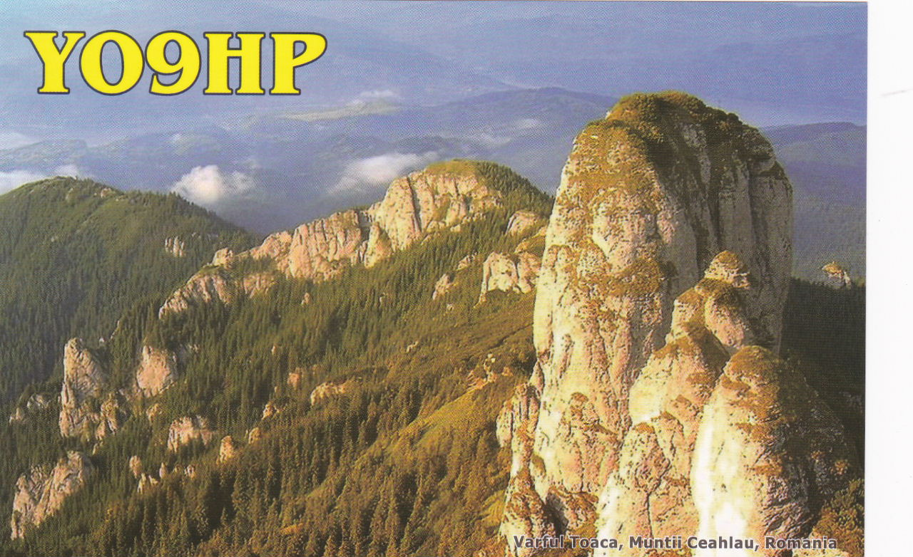
2016年もアクティブにQRVしているOM3EY(L)とYO9HPのQSL
Report from JA1RJU(PM95sq) 19.Jul.2016(15:00d) (K7CW 23:02 50.083 CW into JA7) (W7FI 23:22 50.083 CW into JA7) (KA9CFD 23:25 50.083 CW into JA7) (KC0CF 23:38 50.083 CW into JA7) ------------------------------------------------------------- (N6RMJ 00:18 50.083 CW into JA7) (N6HY 00:33 50.083 CW into JA7) (K6QXY 00:35 50.083 CW into JA7) (N6AX 00:42 50.083 CW into JA7) (JT1FDB/7 02:12 50.103 CW into JA5/7) (EX9T 02:44 50.096 CW into JA8) (UK8OM 02:56 50.101 CW into JA2) EX9T 02:55 50.096 CW CQ CQ Report from JA1RJU(PM95sq) 18.Jul.2016(15:00d) BH4TYL 02:37 50.276+0.361 WSJT JT65a -06dB into JA6 VR2UNG/QRP 03:08 50.276+0.191 WSJT JT65a CQ -11dB E20WXA 03:27 50.276-0.038 WSJT JT65a -08dB CQ (OK03) BH4UTT 04:32 50.276+0.073 WSJT JT65a -07dB QSO with JA7 E20WXA 04:33 50.276-0.261 WSJT JT65a -09dB QSO with JA0 E20WXA 04:43 50.276-0.261 WSJT JT65a -09dB QSO with JA1 E20WXA 04:54 50.276-0.261 WSJT JT65a -07dB QSO with JA9 E20WXA 05:33 50.276-0.261 WSJT JT65a -09dB QSO with JA0 E20WXA 05:05 50.276-0.264 WSJT JT65a -16dB into JA1 E20WXA 05:18 50.276-0.315 WSJT JT65a -10dB into JA1 EX9T 06:01 50.093 CW weak KG6DX 07:30 50.0985 CW BG1WNU 07:59 50.103 CW CQ HL3FRY 08:01 50.097 CW CQ JT1ARI/7 08:13 50.106 CW @ RST599/599 BV6CC 08:40 50.099 CW CQ HL3ANE 08:41 50.103 CW CQ HL3FRY 09:15 50.097 CW CQ CQ HL2CFY 09:15 50.096 CW CQ EA8DBM 09:35 50.100 CW weak HL3DE 09:36 50.100 CW Report from JA1RJU(PM95sq) 17.Jul.2016(15:00e) E20QVD 04:27 50.098 CW into JA0 E2X 04:35 50.090 CW into JA1 HS5NMF 04:36 50.096 CW into JA1 HS1IWX 09:02 50.276 WSJT JT65a Test -11dB HS1IWX 09:08 50.276-0.417 WSJT JT65a Test -19dB HS1IWX 09:18 50.276+0.196 WSJT JT65a Test -09dB QSO with VR2UNG E21EIC 09:20 50.101 CW into JA1/2) HS1IWX 09:30 50.276+0.194 WSJT JT65a Test -12dB QSO with VR2UNG HS3LSE 09:38 50.276+0.439 WSJT JT65a Test -20dB OK14 QSO with VR2UNG HS7WMU 09:42 50.276-0.315 WSJT JT65a Test -20dB QSO with JA5 HS3LSE 09:48 50.276-0.608 WSJT JT65a Test -16dB QSO with JA2 HS0AC 09:58 50.093 CW @ Test 599PM95/599OK04 HS3ANP 10:06 50.101.7 CW @ Test 599PM95/599OK04 E21EIC 10:08 50.083 CW into JA1 E27AH 10:18 50.098 CW @ Test 599PM95/599OK17 HS0AC 10:25 50.093 CW Test 599OK04 BG6CJR 10:34 50.106 CW Test Report from JA1RJU(PM95sq & QM06cb) 16.Jul.2016(15:00e) (W6TDD 22:16 50.099 CW into JA7) (W4UDH 22:29 50.276 WSJT JT65a -19dB QSO with JA1) (KR7O 23:00 50.276 WSJT JT65a -16dB into JA2) (AA7A 23:16 50.087 CW CQ into JA5) (KY7M 23:20 50.0896 CW into JA0) (N6CA 23:47 50.085 CW into JA1) ----------------------------------------------------------------- HL4CNR 00:55 50.276 WSJT JT65a into JA2 BG4DRL 00:57 50.276 WSJT JT65a into JA1 E20WXA 02:20 50.276-0.431 WSJT JT65a into JA2 HS7BHK 02:22 50.276+0.326 WSJT JT65a into JA1 --------------------------[QM06]--------------------------------- UK8FF 08:15 50.098 CW CQ DX UK8OM 08:29 50.101 CW CQ UK8FF 08:30 50.098 CW @ RST579/599 JT1ARI/7 08:36 50.089 CW RST599 Z35T 08:40 50.088 CW @ RST579/599 SV9CVY 08:54 50.276 WSJT JT65a QSO with JA2 SV9CVY 09:20 50.276 WSJT JT65a -11dB into JA1 IT9RZR 09:41 50.092 CW CQ EX8M 09:42 50.100 CW CQ BA4SI 09:50 50.0895 CW CQ UT7QF 09:51 50.082 CW CQ SV1NZX 09:12 50.276 WSJT JT65a QSO with JA2 SV1NZX 09:31 50.276 WSJT JT65a into JA3 IT9RZR 09:33 50.092 CW into JA3 IT9DDS 09:42 50.276 WSJT JT65a into JA2 UT7QF 09:50 50.082 CW into JA3/5 IZ8FFA 09:55 50.276 WSJT JT65a into JA2 IT9RZR 10:00 50.092 CW still good Report from JA1RJU(PM95sq) 15.Jul.2016(15:00e) (K0DU 00:13 50.083 CW into JA7) (K0GU 00:16 50.087 CW into JA0) (AA0KS 00:28 50.083 CW into JA7) EX8M 07:06 50.100 CW CQ CQ UK8OM 07:16 50.101 CW CQ CQ JT7ARI/7 07:40 50.103 CW CQ (UY7VV 08:12 50.276 WSJT JT65a into JA3) (UT4EO 08:18 50.276 WSJT JT65a into JA3) (UY1HY 08:22 50.276 WSJT JT65a into JA3) 4X4DK 08:37 50.113 CW CQ QRM UY7VV 08:50 50.276 WSJT JT65a QSO with JA2 UY7VV 09:00 50.276.28 WSJT JT65a -09dB CQ UY7VV 09:10 50.276.28 WSJT JT65a -19dB "AS UY7VV KN" SV1NZX 09:28 50.276 WSJT JT65a into JA3 SV9CVY 09:32 50.276.6 WSJT JT65a into JA1 SV9CVY 09:38 50.276.6 WSJT JT65a -19dB into JA1 SV9CVY 09:40 50.276.6 WSJT JT65a -18dB QSO with JA3 SV9CVY 09:42 50.276.6 WSJT JT65a -17dB into JA1 Report from JA1RJU(PM95sq) 14.Jul.2016(15:00e) (AB4B 00:14 50.083 CW into JA7) (K0GU 00:55 50.083 CW into JA7) JT5FW 02:13 50.098 CW UN3M 04:54 50.276 WSJT JT65a into JA1 UT9LC 05:15 50.276 WSJT JT65a -22dB into JA1 YO9HP 05:19 50.276 WSJT JT65a -07dB into JA3 UY7VV 05:20 50.276-0.261 WSJT JT65a -10dB QSO with JA7 UY7VV 05:24 50.276-0.261 WSJT JT65a -07dB QSO with JA1 (UX4UA 05:36 50.276 WSJT JT65a -13dB into JA2) UY7VV 05:40 50.276-0.261 WSJT JT65a -05dB QSO with JA2 UY7VV 05:48 50.276 WSJT JT65a -15dB QSO with JA7 (ER1SS 05:52 50.110 SSB CQ into JA0) UY7VV 05:52 50.276 WSJT JT65a -11dB QSO with JA8 US5CB 05:52 50.276 WSJT JT65a into JA1 UY7VV 05:54 50.276 WSJT JT65a into JA1/JA8 UY7VV 06:08 50.276 WSJT JT65a into JA9 (UB7K 09:26 50.088 CW into JA9) (YO9HP 09:31 50.096 CW into JA9) (ER1SS 09:48 50.105 CW into JA2) (9H1TX 09:48 50.107 CW into JA2) (UB7K 10:11 50.087 CW into JA3) (UT8IO 10:15 50.087 CW into JA3) (UB5LAK 10:20 50.276 WSJT JT65a -18dB into JA5) (SV1DH 10:25 50.080 CW into JA1/3/5) (UY7VV 10:29 50.276 WSJT JT65a into JA1) (UT9LC 10:31 50.276 WSJT JT65a -11dB into JA5) (UX4UA 10:37 50.276 WSJT JT65a -15dB into JA1) HL3FRY 11:17 50.095 CW CQ Report from JA1RJU(PM95sq) 13.Jul.2016(15:00d) JT5FW 02:59 50.098 CW RST599 UP1 (QSL via RZ3FW) (EX9T 03:00 50.096 CW into JA7) (UN3GX 05:06 50.085 CW into JA1/2/7) EX8M 05:20 50.100 CW CQ BH2RO 05:27 50.276-0.310 WSJT JT65a -06dB QSO with JA0 (UN7TW 06:00 50.102 CW into JA1) BH2RO 06:06 50.276-0.046 WSJT JT65a CQ -06dB BD0AAI 06:24 50.276+0.269 WSJT JT65a CQ -19dB UK8OM 06:38 50.101 CW CQ BH2RO 06:45 50.276-0.288 WSJT JT65a -07dB QSO with JA3 SV1DH 07:34 50.103 CW weak Report from JA1RJU(PM95sq) 12.Jul.2016(15:00d) BH2RO 05:22 50.276-0.245 WSJT JT65a CQ -07dB BH2RO 05:36 50.276-0.245 WSJT JT65a CQ -08dB BH2RO 05:44 50.276-0.258 WSJT JT65a CQ -06dB UT9LC 06:48 50.276 WSJT JT65a -16dB QSO with JA5 UT9LC 06:50 50.276 WSJT JT65a -03dB QSO with JA1 UT9LC 06:56 50.276 WSJT JT65a -11dB QSO with JA3 UT9LC 07:02 50.276 WSJT JT65a -16dB QSO with JA1 UT9LC 06:50 50.276 WSJT JT65a -03dB QSO with JA1 UT9LC 07:14 50.276 WSJT @ JT65a -12dB/-10dB (50W QSO) OE5OLL 07:20 50.276 WSJT JT65a QSO with JA5 UR5LAK 07:26 50.276+0.164 WSJT JT65a -11dB QSO with JA2 UT9LC 07:28 50.276-0.237 WSJT JT65a -05dB QSO with JA9 UT9LC 07:34 50.276-0.237 WSJT JT65a -11dB QSO with JA7 EX8M 07:36 50.100 CW CQ RST599 UT9LC 07:48 50.276+0.280 WSJT JT65a -11dB QSO with JA9 EX8M 07:52 50.100 CW CQ CQ UN6TA 07:56 50.276-0.280 WSJT JT65a -20dB QSO with JA3 UR5LAK 08:02 50.276-0.423 WSJT JT65a -17dB QSO with JA2 BH2RO 08:08 50.276-0.242 WSJT JT65a CQ -07d UR5LAK 08:16 50.276-0.078 WSJT JT65a -17dB QSO with JA2 UT9LC 08:36 50.276-0.269 WSJT JT65a -13dB QSO with JA0 UT9LC 08:38 50.276-0.269 WSJT JT65a CQ -15dB BH2RO 08:46 50.276+0.557 WSJT JT65a CQ -07dB BH2RO 09:25 50.276-0.240 WSJT JT65a CQ -07dB BH2RO 10:19 50.276+0.043 WSJT JT65a -07dB QSO with JA8 BH2RO 11:13 50.276-0.140 WSJT JT65a CQ -07dB HL1BRU 11:34 50.276+0.336 WSJT JT65a -05dB QSO with JA7 BH2RO 11:40 50.276-0.038 WSJT JT65a CQ -08dB Report from JA1RJU(PM95sq) 11.Jul.2016(15:00c) (EX9T 05:44 50.096 CW into JA2/6) UK8OM 05:59 50.101 CW @ RST579/599 (EX8M 06:05 50.100 CW into JA5/6) (SV1DH 08:05 50.103 CW into JA6) (EX9T 08:43 50.096 CW into JA6) (UT9FJ 08:44 50.086 CW into JA5) (UY7VV 08:49 50.276 WSJT JT65a -17dB QSO with JA5) (YO3JR 08:55 50.091 CW into JA5) (LZ2WO 09:08 50.081 CW into JA6) (UX1UA 09:36 50.082 CW into JA4) Report from JA1RJU(PM95sq) 10.Jul.2016(15:00c) EX8M 06:00 50.100 CW CQ (EX9T 06:30 50.096 CW into JA5) (UN6TA 06:30 50.276 WSJT JT65a into JA5) (UK8OM 06:37 50.101 CW into JA3/5) (YO9BCM 06:40 50.276 WSJT JT65a -11dB into JA5) (EX8M 06:47 50.100 CW into JA2) (YO9BCM 06:54 50.276 WSJT JT65a into JA5) UN7TW 07:05 50.276-0.216 WSJT JT65a CQ -23dB (UT6T 07:16 50.276+0.470 WSJT JT65a into JA5) BH4UTT 07:25 50.276+0.135 WSJT JT65a -09dB UN7TW 07:31 50.276-0.205 WSJT JT65a CQ -15dB UN7TW 07:37 50.276-0.205 WSJT JT65a -10dB QSO with JA1 BH4UTT 07:51 50.276+0.396 WSJT JT65a -08dB QSO with JA1 Report from JA1RJU(PM95sq) 09.Jul.2016(15:00c) DU1EV/B 04:53- 50.008 CW Beacon Report from JA1RJU(PM95sq) 08.Jul.2016(15:00c) BH2RO 06:42 50.276-0.237 WSJT JT65a CQ -06dB BH2RO 06:50 50.276-0.237 WSJT JT65a -13dB QSO with JA1 KL7KY 07:10 50.105 CW BH2RO 08:17 50.276-0.164 WSJT JT65a CQ -11dB Report from JA1RJU(PM95sq) 07.Jul.2016(15:00d) (SV1DH 05:17 50.095 CW into JA8) (SV1DH 04:50 50.102 CW into JA1/3/5/9) (UT7QF 05:50 50.097 CW int JA9) BG3MJ 06:44 50.100 CW CQ RST599 Report from JA1RJU(PM95sq) 06.Jul.2016(15:00e) (UT7QF 05:40 50.097 CW into JA5/6) (EX8M 06:54 50.100 CW into JA5/6) BD2CO 07:15 50.276+0.318 WSJT JT65a CQ -14dB BD2CO 07:17 50.276+0.318 WSJT JT65a CQ -10dB BD2CO 07:33 50.276+0.062 WSJT JT65a CQ -13dB UN7TW 09:48 50.276-0.215 WSJT JT65a CQ -08dB UN7TW 09:50 50.276-0.215 WSJT JT65a CQ -12dB UN7TW 10:04 50.276-0.215 WSJT JT65a -12dB QSO with EI3KD UN7TW 10:10 50.276-0.161 WSJT JT65a -10dB QSO with UR5MED BH2RO 10:15 50.276+0.167 WSJT JT65a -08dB CQ EX8M 10:21 50.100 CW CQ CQ HL5BMK 10:31 50.103 CW CQ RST599 UN7TW 10:36 50.276-0.221 WSJT JT65a CQ -23dB UN6TA 10:55 50.276+0.205 WSJT JT65a into JA2 UN7TW 11:38 50.276-0.207 WSJT JT65a CQ -11dB UN7TW 11:44 50.276-0.406 WSJT JT65a CQ -18dB UN7TW 11:50 50.276-0.406 WSJT JT65a CQ -15dB Report from JA1RJU(PM95sq) 05.Jul.2016(15:00c) BW/JH3GGC 06:07 50.140 SSB RS59 (UY7VV 06:58 50.095 CW into JA8) (I4EAT 06:59 50.095 CW into JA8) BW/JH3GGC 07:00 50.140 SSB RS59 still good (YU6MM 07:10 50.095 CW into JA8) (YU6MM 08:09 50.095 CW into JA8) Report from JA1RJU(PM95sq) 04.Jul.2016(15:00c) HL3FRY 03:45 50.096 CW CQ HL4CNR 04:59 50.276-0.334 WSJT JT65a CQ -08dB Report from JA1RJU(PM95sq) 03.Jul.2016(15:00d) JW7QIA 23:20-00:20 50.082 CW into JA1/2/3/7/9 (1st JA-JW QSO on 6m) ------------------------------------------------------------------------------------------ BH2RO 04:20 50.276-0.030 WSJT JT65a CQ -14dB BH2RO 04:56 50.276-0.137 WSJT JT65a CQ -08dB (HA8FK 07:14 50.082 CW into JA7) (9H1TX 07:36 50.093 CW into JA2) (HA8IB 07:44 50.084 CW into JA7) Report from JA1RJU(PM95sq) 02.Jul.2016(15:00e) UT9LC 05:25 50.276+0.350 WSJT JT65a -25dB into JA1 (OH1TV 06:49 50.087 CW into JA7) OH1ND 06:50 50.092 CW (OH3XA 06:53 50.092 CW into JA7) HL3FRY 07:04 50.097 CW CQ (YO9HP 07:06 50.086 CW into JA7) (LY2IJ 07:11 50.095 CW into JA8) (OG2M 07:19 50.092 CW into JA7) OH1ND 07:27 50.103.5 CW (OH1XT 07:31 50.104.5 CW into JA1/JA0) SM4EMO 07:32 50.102 CW CQ into JA1/JA0 (OH7X/P 07:45 50.104.5 CW into JA8) (HA8IB 07:34 50.095 CW into JA8) (SM6LPF 07:37 50.088 CW into JA7/JA0) (SM5KWU 07:40 50.277 WSJT JT65a into /JA1/JA7) (OH6KTL 07:40 50.276 WSJT JT65a into JA1/JA0) (OH6WD 07:46 50.083 CW into JA1/JA7) (LA5HX 08:03 50.082 CW into JA1) (SM3EVR 08:09 50.079 CW into JA7) SM0MLZ 08:09 50.099 CW (SM2SUM 08:10 50.074 CW JA3) (OH7XM 08:15 50.104.5 CW into JA7/JA8) OH1ND 08:16 50.103.4 CW @ RST559 (OH3GSK 08:17 50.102 CW into JA1/JA4) (SM5KWU 08:18 50.277 WSJT JT65a into JA1) (9A4K 08:18 50.090 CW into JA7) (HA5JI 08:24 50.090 CW into JA7) (OH8LE 08:26 50.277 WSJT into JA0) OH6CT 08:26 50.097.5 CW CQ HL2WA 08:53 50.096 CW CQ (SM3EVR 08:42 50.104.5 CW into JA1) (OH6CT 08:46 50.097 CW into JA0) S59A 08:49 50.082 CW EA8DBM 09:55 50.100 CW (OH7XT 10:15 50.093 CW into JA1/JA7/JA0) (OH7ND 10:25 50.091 CW into JA1/JA7) (OH2MA 10:30 50.102 CW into JA7) Report from JA1RJU(PM95sq) 01.Jul.2016(15:00d) (UT7QF 05:48 50.097 CW into JA1/2/3/5/6) (UT9LC 05:59 50.276 WSJT JT65a into JA6) (YO9HP 06:10 50.096 CW into JA3) (IK0FTA 06:26 50.089 CW into JA6) (JT1CO 06:45 50.097 CW into JA7) (UT7QF 06:48 50.091 CW into JA7) (HA8FK 07:02 50.082 CW into JA6) (UX4UA 07:19 50.276 WSJT JT65a -19dB into JA5) (UY7VV 07:25 50.086.5 CW into JA7) (UR5LAK 07:25 50.276 WSJT JT65a -19dB into JA2) (F2DX 07:35 50.087.5 CW into JA1/JA0 BA4SI 07:40 50.089.4 CW CQ RST599 HL3FRY 07:42 50.095 CW CQ RST599 (YO9HP 07:47 50.276 WSJT JT65a CQ -13dB into JA6) (UW7LL/A 07:48 50.098 CW into JA6)
[Back Issues Jun.2016] TIME:UTC(JST-09:00) Report from JA1RJU(PM95sq) 30.Jun.2016(15:00d) (EA5WU 06:39 50.099.4 CW into JA2-JA5) (I6WJB 06:45 50.088.1 CW into JA5) (EA7HG 06:54 50.087 CW into JA2-JA6) (LZ2WO 07:09 50.082 CW into JA3-JA6) (HA5JI 07:14 50.085.5 CW into JA3-JA6) (DL1YM 07:17 50.082.5 CW into JA3) BH2RO 07:20 50.276-0.140 WSJT JT65a with JA1 BH2RO 07:24 50.276-0.143 WSJT JT65a -09dB with JA1 (EA6VQ 07:25 50.081 CW into JA1-JA6) EA6VQ 07:32 50.081 CW weak (OK1DO 07:42 50.085 CW into JA5-JA6) DJ5JK 07:51 50.276+0.052 WSJT JT65a with JA5 BA1PK 07:54 50.276+0.062 WSJT JT65a CQ -21dB (DK3WG 07:54 50.086 CW into JA5) BG4DRL 07:56 50.276-0.245 WSJT JT65a -07dB calling JA9 (F8ZW 08:08 50.276 WSJT JT65a CQ -13dB into JA5) (OK1FAV 08:09 50.099 CW into JA0) (DL7VEE 08:09 50.089 CW into JA6) (DL5FU 08:11 50.086.5 CW into JA5) (F8ZW 08:32 50.276 WSJT JT65a -15dB into JA6) (LZ2WO 08:33 50.081 CW into JA5-JA6) (YU7EF 08:35 50.095 CW into JA4) (YU1AM 08:47 50.090 CW into JA4) (ER5WU 09:04 50.100 CW into JA5) (ES6RQ 09:19 50.095 CW into JA6) (I6WJB 09:41 50.103 CW into JA6)Report from JA1RJU(PM95sq) 29.Jun.2016(15:00b) Report from JA1RJU(PM95sq) 28.Jun.2016(15:00d) BD2CO 03:03 50.276+0.479 WSJT JT65a CQ -08dB BD2CO 03:10 50.276+0.490 WSJT JT65a CQ -08dB BD2CO 03:51 50.276+0.514 WSJT JT65a CQ -07dB BD2CO 03:55 50.276+0.509 WSJT JT65a -03dB QSO with JA1 BD2CO 04:17 50.276+0.388 WSJT JT65a CQ -09dB BD2CO 04:25 50.276+0.404 WSJT JT65a CQ -10dB BD2CO 05:03 50.276+0.226 WSJT JT65a CQ -11dB BH2RO 06:05 50.276-0.038 WSJT JT65a CQ -06dB BH2RO 06:11 50.276-0.040 WSJT JT65a QRZ -09dB BH2RO 06:31 50.276-0.043 WSJT JT65a CQ -06dB BH2RO 06:42 50.276-0.043 WSJT JT65a CQ -09dB BV6CC 06:58 50.101 CW CQ UK8OM 07:00 50.101 CW CQ RST559 DS4AOW 07:10 50.102 CW CQ BM6GJL 07:28 50.095 CW CQ EU UP1 HL1ADY 09:48 50.276-0.124 WSJT JT65a CQ -24dB Report from JA1RJU(PM95sq) 27.Jun.2016(15:00b)
◎6月23日から30日までSSN(太陽黒点数)は、連日"０(ゼロ)”を記録している。 この太陽活動の低下する中、今日は久しぶりに南ヨーロッパへの伝搬が記録された。ただし、この伝搬は西日本が中心で関東以北は残念ながら”蚊帳の外”状態だった。 夏場のEsシーズンの6月は「夏至」を挟んで活発になると期待していたが、ヨーロッパとのDX伝搬は、今のところ期待外れに終わっている。 ヨーロッパ方面へのこの伝搬は、例年よりも早めに始まったが、今のところ”西高東低”は相変わらずで入感エリアに大きな地域差が出ている。 2015年5月にJT65a(20W)でQSO出来たFR1GZのQSL
Report from JA1RJU(PM95sq) 26.Jun.2016(15:00d) HL2WA 01:28 50.120 SSB CQ 6K2ILX 01:32 50.276-0.106 WSJT JT65a -04dB with JA1 6K2ILX 01:59 50.276 WSJT @ JT65a -03dB/-01dB (20W QSO) 6K2ILX 02:21 50.276 WSJT JT65a CQ -11dB HL2ADY 02:59 50.276-0.304 WSJT JT65a CQ -08dB HL4CNR 03:04 50.276-0.065 WSJT JT65a CQ -06dB DS0WHO 03:20 50.115 SSB 6M6M 03:22 50.115 SSB CQ BH2RO 03:56 50.276-0.048 WSJT JT65a -07dB with JA1 BH2RO 04:58 50.276-0.248 WSJT JT65a CQ -05dB BG4DRL 05:01 50.276 WSJT JT65a -05dB with JA1 BH2RO 05:14 50.276 WSJT JT65a -07dB with JA9 BG4DRL 06:02 50.276-0.312 WSJT JT65a -10dB with JA9 Report from JA1RJU(PM95sq) 25.Jun.2016(15:00d) 6M6M 01:50 50.115 CW CQ CQ HL4CNR 02:23 50.276-0.463 WSJT JT65a with JA1 HL4CNR 02:27 50.276-0.444 WSJT JT65a -07dB with JA3 DU1EV/B 02:30- 50.008 CW Beacon HL3AMO 03:58 50.276-0307 WSJT JT65a -12dB with JA1 HL3AMO 04:01 50.276-0307 WSJT JT65a -11dB with JA2 HL/VK6JJJ 04:51 50.276-0.043 WSJT JT65a -10dB with JA1 6M6M 05:20 50.095 CW CQ CQ Report from JA1RJU(PM95sq) 24.Jun.2016(15:00d) A92GE 06:00 50.102.5 CW A92GE 06:16 50.102.5 CW RST559/559 6M6M 06:24 50.105 CW CQ CQ 9K2OD 06:27 50.120 SSB RS59 QSB 9K2OD 06:58 50.120 SSB @ RS55/59 6M6M 07:04 50.105 CW CQ EX8M 07:28 50.100 CW UT6TA 07:40 50.276 WSJT JT65a into JA1 BH2RO 07:41 50.276+0.358 WSJT JT65a CQ -06dB BH2RO 07:57 50.276+0.358 WSJT JT65a CQ -10dB BD2CO 08:05 50.276+0.526 WSJT JT65a CQ -04dB BD2CO 08:13 50.276 WSJT @ JT65a -10dB/-11dB (20W QSO) HL/VK6JJJ 08:17 50.276 WSJT JT65a with BD2CO BH2RO 08:18 50.276-0.439 WSJT JT65a CQ -06dB BH2RO 08:28 50.276+0.161 WSJT JT65a CQ -06dB Report from JA1RJU(PM95sq) 23.Jun.2016(15:00c) (K5KI 00:32 50.083 CW into JA7) HL2ZBD/3 03:28 50.276.8 WSJT JT65a -06dB HL2ZBD/3 03:42 50.276.8 WSJT @ JT65a -06dB/-09dB (20W QSO) BH2RO 06:11 50.276-0.167 WSJT JT65a CQ -09dB BH2RO 06:17 50.276-0.167 WSJT JT65a CQ -10dB BH2RO 06:48 50.276-0.167 WSJT JT65a CQ -16dB Report from JA1RJU(PM95sq) 22.Jun.2016(15:00e) 6L0NJ/B 02:36- 50.051 CW Beacon HL4CNR 03:37 50.276-0.540 WSJT JT65a CQ -04dB HL4CNR 04:00 50.276.6 WSJT @ JT65a -02dB/-07dB (20W QSO) BA1PK 06:27 50.276-0.086 WSJT JT65a CQ -14dB (OH80) (UN7TW 06:27 50.276 WSJT JT65a -17dB into JA5) BA1PK 06:45 50.276 WSJT @ JT65a -07dB/-07dB (30W QSO) BA1PK 06:57 50.276 WSJT JT65a CQ -12dB UT7QF 07:16 50.276-0.038 WSJT JT65a -07dB into JA3 UN8GC 07:32 50.276.5 WSJT JT65a -07dB Clg UT7QF (MN95) UN8GC 07:38 50.275.2 WSJT JT65a -07dB QSO with JA3 EX8M 08:00 50.100 CW RST599 EX8M 08:35 50.100 CW still good RST599+ UN7TW 08:40 50.276 WSJT JT65a CQ -11dB UN7TW 09:05 50.276 WSJT JT65a still good (-6dB to -11dB) UN3GX 09:21 50.087 CW UN7TW 09:26 50.276 WSJT JT65a still -10dB BH2RO 09:46 50.276-0.199 WSJT JT65a -08dB Report from JA1RJU(PM95sq) 21.Jun.2016(15:00d)(夏至) 6L0NJ/B 04:00- 50.051 CW Beacon UT7EW 05:44 50.276-0.040 WSJT JT65a CQ -15dB (KN78) UT7EW 05:46 50.276-0.040 WSJT JT65a CQ -23dB (KN78) (EX8M 05:47 50.099.8 CW into JA0) HL/VK6JJJ 08:41 50.276-0.043 WSJT JT65a CQ -04dB 6L0NJ/B 08:55- 50.051 CW Beacon Report from JA1RJU(PM95sq) 20.Jun.2016(15:00d) (K0DU 00:33 50.083 CW into JA7) (K6FV/B 00:53- 50.069 CW into JA7) (AE3T/6 01:02 50.083 CW into JA9) (UN7TW 05:20 50.276 WSJT into JA5) EX8M 05:22 50.100 CW weak in PM95sq BG2ATH 05:26 50.276-0.275 WSJT JT65a -04dB into JA2 (UK8OM 05:32 50.101 CW into JA5) (EX8M 05:41 50100 CW into JA7) (UT7QF 05:46 50.096 CW into JA2) (UT9FJ 05:51 50.086 CW into JA5) UN7TW 06:04 50.276-0.358 WSJT JT65a -09dB into JA3 UN7TW 06:16 50.276 WSJT JT65a -11dB into JA3 UN7TW 06:22 50.276-0.086 WSJT JT65a -09dB into JA4 UN7TW 06:30 50.275.561 WSJT @ JT65a -01db/-07dB (40W QSO) OH2BC 06:42 50.275-0.24 WSJT JT65a into JA3 BG2ATH 06:51 50.276-0.156 WSJT JT65a -03dB into JA1 OH7PI 06:58 50.276-0.280 WSJT JT65a -19dB into JA3 UN7TW 07:01 50.276-0.054 WSJT JT65a into JA0 OH7PI 07:13 50.276-0.108 WSJT JT65a into JA3 (OH7PI 07:24 50.276 WSJT JT65a into JA5) (UN6TA 07:19 50.276 WSJT JT65a into JA7) GU8FBO 07:30 50.276-0.315 WSJT JT65a into JA3 DJ3OS 07:33 50.276-0.073 WSJT JT65a into JA2 OE5OLL 07:54 50.276-0.011 WSJT JT65a into JA2 OH7PI 08:02 50.276+0.541 WSJT JT65a into JA3 Report from JA1RJU(PM95sq) 19.Jun.2016(15:00d) HL2ZBD 04:15 50.276+0.291 WSJT JT65a CQ -07dB PA2M 06:54 50.097.6 CW (HA6W 07:11 50.091 CW into JA6) (S59P 07:18 50.080 CW into JA6) (ON7GB 07:33 50.276 WSJT JT65a -14dB into JA5) (IW2HAJ 07:41 50.098 CW into JA5) (ON4IQ 07:44 50.276 WSJT JT65a CQ -21dB into JA5) (DK8NE 07:52 50.276 WSJT JT65a CQ -24dB into JA5) Report from JA1RJU(PM95sq) 18.Jun.2016(15:00c) BM3IMD 04:28 50.130 SSB CQ BX3ABL 04:30 50.140 SSB CQ HL2CFY 04:33 50.104 CW CQ BV1EK 04:35 50.103 CW CQ (LZ1QI 05:59 50.090 CW into JA2) Report from JA1RJU(PM95sq) 17.Jun.2016(15:00b) Report from JA1RJU(PM95sq) 16.Jun.2016(15:00b) Report from JA1RJU(PM95sq) 15.Jun.2016(15:00c) (UT7QF 04:14 50.092 CW into JA7) (EX8M 06:01 50.099 CW into JA8) (UT7QF 06:09 50.097 CW into JA8) Report from JA1RJU(PM95sq) 14.Jun.2016(15:00c) (I4ZQS 06:08 50.276 WSJT into CQ -21 into JA5) HA8FK 06:12 50.089 CW CQ RST579 QSB (HA5JI 06:18 50.085 CW CQ into JA6) (IZ5EKV 06:21 50.088 CW into JA5) (HA8FK 06:21 50.082 CW into JA6) HA8FK 06:22 50.089 CW CQ QSB (S59A 06:25 50.088 CW into JA1) (IZ5EKV 06:26 50.088 CW into JA1) (9H1XT 06:33 50.087 CW into JA0) (G0LFF 06:39 50.276 WSJT into JA6) (UT7QF 06:45 50.091 CW into JA0) (UT4UO 07:06 50.102 CW into JA0) (UX4UA 07:30 50.276 WSJT into JA1) Report from JA1RJU(PM95sq) 13.Jun.2016(15:00d) (K0GU 21:06 50.052 CW into JA7) (K0GU 21:28 50.052 CW into JA1) (K5RK 21:50 50.105 CW into JA2/4) (NV9L 22:19 50.085 CW into JA8) (NV9L 22:30 50.085 CW into JA2) (N5DG 22:41 50.086 CW into JA2) (K0TPP 23:02 50.050 CW into JA7) (K5QE 23:19 50.081 CW into JA9) (N5CR 23:47 50.050 CW into JA7) ------------------------------------------------------------ 5B4AHJ 07:04 50.091 CW into JA1 5B4AHJ 07:11 50.091 CW into JA1 EX9T 07:16 50.091 CW EX8M 07:45 50.099.8 CW CQ CQ Report from JA1RJU(PM95sq) 12.Jun.2016(15:00d) HL1IBG 03:00 50.098 CW 6L0NJ/B 03:30- 50.051 CW Beacon HL1LUA 03:05 50.105 CW HL2WA 03:07 50.130 CW HL1LUA 04:58 50.098 CW CQ HL5BMX 05:26 50.103 CW (KL7KY 05:29 50.094 CW into JA1) (YO8RHI 05:35 50.098 CW into JA5) YO8RHI 05:41 50.088 CW weak YO8BHN 05:35 50.086 CW weak (UB7K 06:10 50.087 CW into JA7) (R6KA 06:05 50.084 CW into JA7) BD1IIJ 06:20 50.103 CW CQ HL2CFY 06:27 50.105 CW CQ EU (UR5LAK 06:30 50.276 WSJT JT65a -13dB QSO with JA5) (UX7LT 06:32 50.276 WSJT JT65a -19dB QSO with JA5) (UR0MC 06:43 50.092 CW into JA1) DS5USH 06:47 50.102 CW UY7QN 06:48 50.102 CW @ RST579 (UR5LAK 06:59 50.276 WSJT JT65a -15dB QSO with JA5) UT7QF 07:00 50.095 CW UR0MC 07:22 50.092 CW @ RST599 QSB (YO9HP 07:29 50.099 CW into JA3) EX9T 07:49 50.101 CW RST599 QSB UT4UO 08:00 50.102.5 CW weak YT9A 08:25 50.083 CW weak YU7EF 08:32 50.087 CW weak EX8M 10:02 50.100 CW UK8OM 10:10 50.100 CW EX8M 10:55 50.100 CW CQ CQ EX8M 11:35 50.100 CW CQ CQ Report from JA1RJU(PM95sq) 11.Jun.2016(15:00d) HL2CFY 01:17 50.105 CW CQ BH4TQX 02:39 50.276+0.164 WSJT JT65a -09dB (QSO with JA1) BG4DRL 03:04 50.276.5 WSJT JT65a -06dB (QSO with JH4) 6L0NJ/B 03:35- 50.051 CW Beacon BD2CO 04:42 50.276+0.110 WSJT JT65a -06dB (QSO with 7K1) BD2CO 04:46 50.276+0.563 WSJT JT65a -07dB (QSO with JE1) (UN7TW 05:09 50.102 CW into JA6) HL2ADY 10:39 50.276-0.110 WSJT JT65a CQ -08dB HL3AMO 10:45 50.276+0.310 WSJT JT65a -06dB (QSO with JM2) HL2ADY 10:51 50.276-0.110 WSJT JT65a -06dB (QSO with JH1) HL3AMO 10:58 50.276+0.621 WSJT JT65a -06dB (QSO with JA7) HL2ADY 11:19 50.276-0.110 WSJT JT65a -12dB (QSO with JA5) HL2ADY 11:23 50.276-0.110 WSJT JT65a -15dB (QSO with JA3) 6L0NJ/B 12:10- 50.051 CW Beacon Report from JA1RJU(PM95sq) 10.Jun.2016(15:00c) (KE7V 23:37 50.085 CW into JA1) (WA7GCS 23:55 50.085 CW into JA1) ------------------------------------------------------------- (W7RWT 00:00 50.085 CW into JA1) (KE7V 00:15 50.090 CW into JA7) (K7CW 00:20 50.083 CW into JA7) (KE7V 00:32 50.088 CW into JA0) (KL7HBK 00:35 50.085 CW into JA1) (UT5ID 06:15 50.097 CW into JA9) (PA2M 08:08 50.088 CW into JA0) (EI4KF 08:12 50.088 CW into JA0) (HA5JI 08:27 50.098 CW into JA7) EX8M 08:53 50.081 CW CQ weak (HA5JI 08:59 50.098 CW into JA2) (OE5OLL 09:26 50.276 WSJT JT65a into JA6) (SV2DCD 09:28 50.106 CW into JA6) (HA5JI 09:28 50.082 CW into JA6) Report from JA1RJU(PM95sq) 09.Jun.2016(15:00d) VR2SIX/b 02:00- 50.075 CW Beacon BG5HIE 02:16 50.276+0.643 WSJT JT65a CQ -07dB BG5HIE 02:30 50.276.7 WSJT @ JT65a -06dB/-07dB (20W QSO) 6K5CZX 02:54 50.276.7 WSJT JT65a -06dB (QSO with BG5HIE) BG5HIE 02:54 50.276+0.643 WSJT JT65a CQ -03dB JR6YAG/b 04:00- 50.037 CW Beacon (Pkinawa) BD4DRL 04:01 50.276+0.013 WSJT JT65a -04db (QSO with 8N1US) BN4QFI 04:08 50.105 CW CQ (UY7QN 04:58 50.090 CW into JA7) UT7QF 05:02 50.097 CW CQ UN8M 05.07 50.087.5 CW UT7QF 05:12 50.097 CW UT5ID 05:16 50.092 CW (UR0MC 05:31 50.093 CW into JA7) UR0MC 05:40 50.093 CW Report from JA1RJU(PM95sq) 08.Jun.2016(15:00d) BG2TOS 04:30 50.100 CW CQ 6L0NJ/B 04:35- 50.051 CW Beacon 9K2GS 04:38 50.115 SSB QSB YO9HP 04:51 50.089 CW weak (OM3EY 04:30 50.098 CW into JA3/0) (SP7EXY 04:33 50.097 CW into JA4) (S59A 04:40 50.089 CW into JA3/0) HL2IFR 05:25 50.088 CW calling EU DF3CB 05:25 50.088 CW weak JT1CO 05:50 50.097 CW (OK1DM 06:49 50.095 CW into JA5) (OK7GU 06:58 50.089 CW into JA5) (OK1FAV 07:33 50.081 CW into JA5) (UK8OM 07:39 50.101 CW into JA7) OM3EY 07:44 50.098 CW CQ OM3EY 07:46 50.098 CW @ RST579/579 OE3DIA 07:50 50.096 CW weak BD8DBG 07:58 50.108 CW CQ DK3WG 08:10 50.111 CW weak (F6ITD 08:39 50.276 WSJT JT65a into JA6) (4O6AH 08:41 50.085 CW into JA6) (DL5WOG 08:53 50.276 WSJT JT65a -13dB into JA6) 6L0NJ/b 09:14- 50.051 CW Beacon Report from JA1RJU(PM95sq) 07.Jun.2016(15:00f) UN3GX 04:35 50.098 CW 04:41 QSY? VR2SIX/b 04:40- 50.075 CW Beacon (UW1HM 04:38 50.097 CW into JA6) JT1CO 05:37 50.097 CW into JA1.7.0 (UB7K 05:48 50.102 CW into JA3-6) (9H1TX 06:20 50.082 CW into JA5) JT1CO 06:39 50.097 CW @ RST599/599 QSB (OM5XX 07:24 50.094 CW into JA3) (YO9HP 07:46 50.087 CW into JA6) JT1CO 09:29 50.097 CW CQ BH5HBU 09:36 50.093 CW RST599 VR2SIX/b 09:39- 50.075 CW Beacon BH4BFS 09:42 50.106 CW RST599 (4Z5HG 12:35 50.097 CW into JA4) (UN8GC 12:50 50.106 CW into JA9) (R6KA 12:58 50.084 CW into JA4-6) (UB7K 13:19 50.081 CW into JA2) EX8M 13:20 50.100 CW CQ UN8GC 13:33 50.106 CWReport from JA1RJU(PM95sq) 06.Jun.2016(15:00e) 6L0NJ/B 02:40- 50.051 CW Beacon HL5/VK6JJJ 08:21 50.276-0.261 WSJT JT65a -16dB (QSO with JM1) HL2CFY 09:08 50.104.5 CW CQ RST599 6L0NJ/B 09:10- 50.051 CW Beacon HL2FDW 09:15 50.105 CW HL5/VK6JJJ 09:17 50.110 SSB CQ BG4QYH 09:22 50.110 SSB CQ RS59 HL5FKP 09:27 50.140 SSB CQ RS59 HL2WA 09:30 50.120 SSB CQ RS59 HL1IBG 09:35 50.102 CW CQ VR2ZLK 09:52 50.150 SSB DS3EXX 09:54 50.125 SSB RS59 HL5/VK6JJJ 09:59 50.276-0.253 WSJT JT65a -06dB Report from JA1RJU(PM95sq) 05.Jun.2016(15:00c) BV0WPX 23:05 50.120 SSB BW3/JH3GGC 23:30 50.130 SSB ------------------------------------------- BV0WPX 00:40 50.145 SSB DU1/JA3FJE 00:07 50.150 SSB DU1EV/B 00:08- 50.007.9 CW Beacon BM3GFU 08:40 50.115 SSB CQ JR6YAG/b 02:55- 50.037 CW Beacon (Okinawa) Report from JA1RJU(PM95sq) 04.Jun.2016(15:00d) BV0WPX 03:07 50.120 SSB BW3JH3GGC 03:12 50.125 SSB RS59 BY4QQ 05:39 50.110 SSB BI4VTX 05:43 50.105 SSB KG6DX 05:56 50.104 CW CQ DX BV6YA 07:25 50.098 CW CQ VR2YAK 07:37 50.095 CW CQ BV0WPX 08:13 50.120 SSB CQ Report from JA1RJU(PM95sq) 03.Jun.2016(15:00b) Report from JA1RJU(PM95sq) 02.Jun.2016(15:00d) (EX8M 02:57 50.099.9 CW into JA5/7/8) EX8M 04:51 50.097.9 CW into JA6) BV0WPX 05:14 50.276+0.054 WSJT JT65a -19dB (QSO with JH4) BV2KI 05:15 50.276+0.027 WSJT JT65a -22dB (QSO with JH4) (UN3GX 05:22 50.101 CW into JH6) BV0WPX 05:25 50.276+0.027 WSJT JT65a -24dB (QSO with JR2) (YO9HP 07:41 50.097 CW into JE6) BV6CC 08:29 50.276-0.404 WSJT JT65a -06dB (QSO BV7RJ) VR2XMT 08:30 50.276+0.170 WSJT JT65a CQ -09dB VR2ZLK 08:35 50.135 SSB CQ VR2VAZ 08:37 50.135 SSB VR2ZLK 08:41 50.135 SSB @ RS59/59 Report from JA1RJU(PM95sq) 01.Jun.2016(15:00g) BD9BU 02:25 50.096 CW 6L0NJ/B 02:25- 50.051 CW Beacon VR2SIX/b 02:27- 50.075 CW Beacon VR2ZQZ 02:30 50.110 CW CQ BD8ASG 02:48 50.107 CW CQ EX8M 03:03 50.099.9 CW weak & QSB BG6LQV 03:30 50.098.7 CW CQ CQ BG4DRL 03:35 50.276-0.180 WSJT JT65a -10dB (QSO with JH1) UN7TW 03:55 50.100 CW weak EX8M 03:57 50.099.9 CW weak 9K2NO 04:10 50.104 CW BH4BFS 04:17 50.103 CW 9K2NO 04:24 50.104 CW UP BD9BU 05:16 50.276-0.221 WSJT JT65a CQ -14dB BG9GXM 06:09 50.275-0.097 WSJT JT65a CQ -05dB BG9GXM 06:31 50.275-0.094 WSJT @ JT65a -07dB/-04dB (QSO 40W) BG9GXM 06:45 50.275-0.094 WSJT @ JT65a -06dB (QSO with JA1) BA4SI 07:21 50.089 CW CQ 6L0NJ/B 08:00- 50.051 CW Beacon BH2RO 08:22 50.277-0.032 WSJT @ JT65a -08dB/-11dB (QSO 20W) HL3FRY 08:34 50.107 CW CQ (EX8M 13:11 50.100 CW into JA6 (UB7K 13:22 50.103 CW into JA1) 6L0NJ/B 13:57- 50.051 CW Beacon with Buzz
◎"NOAA"が発表している"Solar and geomagnetic data"によると、6月3日から6日までの"Sunspot numder"（太陽黒点数）は、4日連続でゼロ（0）を記録している。ソラーフラックス値（Measured solar flax）も、5月18日の102.3を最後に3桁を切り、6月6日には78.5まで下降して急速に”サイクル24”も最低期に近づいている。 太陽活動に左右される6mバンドのDXコンデションは、いよいよ「暗黒の時代」に向かっている。現在は夏のEsシーズンを迎え、日本国内や台湾、中国、韓国などの近場のDXのQSOでバンドは賑わっているが、春、秋のDXシーズンのDX伝搬は大幅な激減が予想される。 心配されていた夏場のEsシーズンの”マルチホップ”による中近東やヨーロッパとのDX伝搬は、短時間ながらオープンしているのが唯一の救いとなって居る。ただ、ヨーロッパ方面へのこの伝搬は、例年よりも早めに始まったが、今のところ”西高東低”で入感エリアによって大きな地域差が出ている。
[Back Issues May.2016] TIME:UTC(JST-09:00) Report from JA1RJU(PM95sq) 31.May.2016(15:00g) VR2XMT 02:25 50.276+0.100 WSJT JT65a CQ -02dB BG4DRL 02:26 50.276-0.382 WSJT JT65a VR2UNG/QRP 02:27 50.276-0.382 WSJT JT65a CQ -08dB HL4CHR 02:34 50.276-0.581 WSJT JT65a CQ -07dB VR2UNG/QRP 02:39 50.276-0.377 WSJT JT65a CQ -07dB VR2XMT 03:02 50.276-0.425 WSJT JT65a -04dB (QSO with JA5) JR6YAG/b 03:00- 50.037 CW Beacon (Okinawa) 6L0NJ/B 03:00- 50.051 CW Beacon VR2SIX/b 03:00- 50.075 CW Beacon EX8M 04:08 50.100 CW CQ CQ RST599 EX8M 04:45 50.100 CW CQ (SP5EWY 05:49 50.092 CW into JA0) OM5XX 06:00 50.085 CW into JA1 (JT5DX 06:24 50.100 CW into JA2) (SM5AQD 06:27 50.099 CW into JH6) (UK8OM 06:43 50.087 CW into JA7) (9H1TX 07:23 50.087.9 CW into JE6) BH2RO 07:32 50.276+0.261 WSJT JT65a CQ -08dB BA1PK 07:33 50.276+0.544 WSJT JT65a -17dB (QSO with JH4) BH2RO 07:50 50.276+0.258 WSJT JT65a CQ -11dB BD0AAI 07:52 50.276-0.431 WSJT JT65a -15dB (QSO with JH3) BG4TRN 07:57 50.276+0.498 WSJT JT65a -10dB (QSO with JA7) BD0AAI 08:06 50.276-0.423 WSJT JT65a CQ -06dB BA1PK 08:10 50.276+0.498 WSJT JT65a -11dB (QSO with JE1) BH2RO 08:14 50.276+0.261 WSJT JT65a -12dB (QSO with JF4) BA1PK 08:16 50.276+0.498 WSJT JT65a -12dB (QSO with JA7) BH2RO 08:34 50.276+0.261 WSJT JT65a -07dB (QSO with JA7) BG4TRN 08:41 50.276+0.514 WSJT JT65a CQ -08dB BH2RO 08:44 50.276+0.070 WSJT JT65a -06dB (QSO with JA1) BH2RO 08:50 50.276+0.070 WSJT @ JT65a -09dB/-09dB (QSO 30W) BH2RO 10:20 50.276+0.226 WSJT JT65a CQ -07dB BH2RO 10:24 50.276+0.226 WSJT JT65a CQ -07dB HL/VK6JJJ 11:57 50.276+0.013 WSJT JT65a -08dB (QSO with JA1) HL/VK6JJJ 12:13 50.276+0.005 WSJT JT65a -03dB (QSO with JA7) HL/VK6JJJ 12:25 50.276+0.587 WSJT JT65a -06dB (QSO with JA0) Report from JA1RJU(PM95sq) 30.May.2016(15:00d) JR6YAG/b 02:55- 50.037 CW Beacon (Okinawa) VR2SIX/b 02:55- 50.075 CW Beacon BD7ASP 03:08 50.107 CW @ RST599/599 VR2XMT 03:13 50.276-0.460 WSJT JT65a CQ -07dB UT7QF 04:00 50.095.9 CW @ RST559/579 UX7LT 04:05 50.101 CW weak XW1IC 04:15 50.107 CW @ UP1 RST599 UW1HM 05:01 50.103 CW @ RST559/579 UW1HM 05:12 50.103 CW CQ DS5USH 05:24 50.098 CW CQ UT4UO 05:28 50.102 CW weak (E77ZM 06:42 50.099 CW CQ) (UB7K 06:46 50.089 CW into JA2-6/9) Report from JA1RJU(PM95sq) 29.May.2016(15:00c) HL/VK6JJJ 03:30 50.276+0.256 WSJT JT65a -12dB (QSO with JA5) BV0WPX 06:06 50.095 CW CQ EU EX8M 06:12 50.100 CW CQ R6KA 06:16 50.090.7 CW weak into PM95 R6KA 07:20 50.090.7 CW weak QSB UB7K 07:40 50.086.5 CW weak DS4EOI 07:57 50.104 CW CQ EU ON4IQ 08:03 50.080.7 CW weak into PM95 EA8DBM 08:20 50.100 CW 6 JAs QSO at Today LA9BM 08:24 50.084 CW into PM95 Report from JA1RJU(PM95sq) 28.May.2016(15:00e) JA6YBR/b 03:00- 50.017 CW Beacon(Miyazaki) Es strong!RST599 JR6YAG/b 03:00- 50.037 CW Beacon (Okinawa) 6L0NJ/B 03:00- 50.051 CW Beacon VR2SIX/b 03:00- 50.075 CW Beacon BV2CE 03:00 50.115 SSB RS59 DS1MFC 03:28 50.276+0.059 WSJT JT65a with JA1/5/6 and RTTY QRMM! (EX8M 05:19 50.100 CW into JE6) (R6KA 05:40 50.092 CW QSO with JE6) (YO9HP 05:58 50.087 CW QSO eith JE6) EX8M 06:28 50.100 CW CQ (R6KA 06:33 50.092 CW into JA2-6) (ER1SS 06:45 50.101 CW into JE6) (UK8OM 06:47 50.101 CW into JG3) (UB7K 06:56 50.090 CW into JG3) R6KA 06:58 50.092 CW into QM06 QSB R6KA 07:05 50.092 CW @ RST559/599 EU Russia (EX8MLT 07:10 50.113 SSB into JG3) R6KA 07:25 50.092 CW CQ weak (ER1SS 07:35 50.127 SSB QSO with JE6) (UB7K 07:41 50.090 CW into JE6) (UK8OM 08:02 50.101 CW into JN3) EX9T 08:49 50.096 CW @ RST599/599 CQ EX8M 09:00 50.100 CW CQ Report from JA1RJU(PM95sq) 27.May.2016(15:00c) (9H1TX 06:41 50.089.5 into JE6) (UB7K 06:55 50.081 QSO with JE6) Report from JA1RJU(PM95sq) 26.May.2016(15:00c) BW/JH3GGC 01:25 50.120 SSB RS59 JR6YAG/b 02:40- 50.037 CW Beacon (Okinawa) Report from JA1RJU(PM95sq) 25.May.2016(15:00f) HL4CNR 03:23 50.276+0.266 WSJT JT65a CQ -05dB JR6YAG/b 05:30- 50.037 CW Beacon (Okinawa) VR2SIX/b 05:30- 50.075 CW Beacon VR2XMT 05:41 50.276-0.261 WSJT JT65a -11dB (QSO with 7L1) T88UA 05:50 50.117 SSB RS59 QSL via JH2DFJ VR2XMT 06:17 50.276-0.116 WSJT JT65a CQ -07dB BG4DRL 06:32 50.276-0.261 WSJT JT65a -10dB (QSO with JR0) VR2XMT 06:35 50.276-0.256 WSJT JT65a -05dB (QSO with JA3) BA8AG 06:50 50.098 CW CQ BV6CC 07:40 50.100 CW CQ EU HL3FRY 07:54 50.105 CW KG6DX 07:56 50.092 CW HL2WA 07:59 50.092 CW HL/VK6JJJ 08:15 50.276+0.428 WSJT JT65a -04dB (QSO with JA9) 6L0NJ/B 08:20- 50.051 CW Beacon DU1EV/B 08:25- 50.007.9 CW Beacon VR2XMT 08:37 50.276-0.110 WSJT JT65a -06dB (QSO with JH1) BA8AT 08:49 50.102 CW CQ RST599 HL2CFY 08:58 50.095 CW CQ RST599 BA8AG 09:02 50.098 CW CQ HL4GHT 09:08 50.095 CW Report from JA1RJU(PM95sq) 24.May.2016(15:00d) JR6YAG/b 05:00- 50.037 CW Beacon (Okinawa) BX2AB 05:30 50.107 CW CQ JA6YBR/b 08:30- 50.017 CW Beacon(Miyazaki) RST599 BV6CC 08:56 50.098 CW RST599 BM6GJL 09:23 50.089 CW CQ EU KG6DX 09:27 50.105 CW CQ DX Report from JA1RJU(PM95sq) 23.May.2016(15:00c) DU1EV/B 09:20- 50.007.9 CW Beacon JR6YAG/b 09:20- 50.037 CW Beacon (Okinawa) RST599 JA6YBR/b 09:30- 50.017 CW Beacon(Miyazaki) Report from JA1RJU(PM95sq) 22.May.2016(15:00e) BX0VQP 01:22 50.133 SSB RS59 BU2BV 01:26 50.140 SSB JR6YAG/b 02:50- 50.037 CW Beacon RST599(Okinawa) BU2BV 05:08 50.276+0.043 WSJT JT65a -27dB (QSO with JA5) BX0VQP 05:57 50.133 SSB CQ RS59 HL2CFY 06:15 50.105 CW CQ HL/VK6JJJ 07:47 50.276+0.038 WSJT JT65a -05dB HL/VK6JJJ 07:52 50.276+0.038 WSJT JT65a CQ -07dB 6L0NJ/B 08:00- 50.051 CW Beacon HL2CFY 08:00 50.105 CW CQ RST599+ HL1LUA 08:29 50.102 CW CQ CQ SV1DH 08:43 50.102 CW CQ RST559/559 QSB! Report from JA1RJU(PM95sq) 21.May.2016(15:00d) (A71EM 05:00 50.102 CW into JE6) (UK8OM 05:32 50.101 CW into JE6) (9K2MU 06:01 50.101.8 CW into JE6) 9K2MU 06:07 50.101.8 CW weak CQ BH4QYX 06:18 50.102 CW Report from JA1RJU(PM95sq) 20.May.2016(15:00f) VR2XMT 02:23 50.276-0.509 WSJT JT65a CQ -20dB (GL=OL-72) BM6GJL 02:24 50.276-0.509 WSJT JT65a -16dB (QSO with VR2XMT) VR2XMT 02:35 50.276-0.167 WSJT @ JT65a -0.1dB/-011dB (30W QSO) VR2XMT 02:45 50.276-0.145 WSJT JT65a -09dB (QSO with JG3) VR2SIX/b 02:54- 50.075 CW Beacon DU1EV/B 02:55- 50.007.9 CW Beacon HL4CNR 03:04 50.276-0.533 WSJT JT65a (with JA5) HL4CNR 03:11 50.276+0.156 WSJT JT65a CQ -09dB VR2XMT 03:18 50.276+0.153 WSJT JT65a -08dB (QSO HL4CNR) JR6YAG/b 05:40- 50.037 CW Beacon(Oinawa) BU2BW 05:51 50.276.823 WSJT JT65a CQ -17dB (GL=PL-05) (A71EM 06:43- 50.102 CW into JE6 RST599) (9K2MU 07:39 50.106 CW QSO with JE6) (9K2MU 08:20 50.106 CW QSO with JA5/6 RST559) HL2CFY 08:34 50.106 CW calling 9K2MU 4X4DK 08:56- 50.105 CW QSO with JA1/2/3/4/5/6/9 HL2WA 09:48 50.105 CW calling 4X4DK 4X4DK 09:53 50.105 CW UP1 Big JA pile ! HL3DE 10:08 50.106.5 CW calling 4X4DK EX8M 10:33 50.100 CW @ UP1 RST599 Big JA pile ! (4O6A? 10:46 50.096 CW into JN1/JE6) BG9MFY 10:54 50.105 CW CQ BG9NFY 11:04 50.105 CW @ BG3SSA 11:09 50.107.5 CW @ RST599 EX8M 11:15 50.100 CW CQ Report from JA1RJU(PM95sq) 19.May.2016(15:00d) 6L0NJ/B 02:43- 50.051 CW Beacon HL4CNR 02:55 50.276-0.011 WSJT JT65a -08dB (QSO with JA1) HL4CNR 03:45 50.276-0.024 WSJT JT65a -20dB (QSO with JA9) Report from JA1RJU(PM95sq) 18.May.2016(15:00c) VK4RTL/b 08:58- 50.282 CW Beacon RST579 QSB JR6YAG/b 09:00- 50.037 CW Beacon RST599 (Good open to Okinawa) Report from JA1RJU(PM95sq) 17.May.2016(15:00c) BV6CC 03:03 50.098 CW BV6CC 03:05 50.098 CW @ RST599 DU1/JA3FJE 03:11 50.173 SSB BM6GJL 03:17 50.276+0.638 WSJT JT65a QRM with JA1 Report from JA1RJU(PM95sq) 16.May.2016(15:00b) Report from JA1RJU(PM95sq) 15.May.2016(15:00d) (UT7QF 07:55 50.081.5 CW RST559 JE6) (UT7QF 08:03 50.081 CW RST599 JE6) (UR0MC 08:10 50.058.9 CW RST539/599 JE6) (SP5CFD 08:22 50.086 CW RST559 JE6) (SP9DSD 08:30 50.105 CW into HL2) (UY2UR 08:35 50.260 PSK-31 into HL2)Report from JA1RJU(PM95sq) 14.May.2016(15:00b) Report from JA1RJU(PM95sq) 13.May.2016(15:00c) BH4BFS 02:55 50.102 CW CQ CQ BH4BFS 03:08 50.102 CW @ RST599 QSB Report from JA1RJU(PM95sq) 12.May.2016(15:00b) Report from JA1RJU(PM95sq) 11.May.2016(15:00b) Report from JA1RJU(PM95sq) 10.May.2016(15:00b) Report from JA1RJU(PM95sq) 09.May.2016(15:00b) Report from JA1RJU(PM95sq) 08.May.2016(15:00b) Report from JA1RJU(PM95sq) 07.May.2016(15:00b) Report from JA1RJU(PM95sq) 06.May.2016(15:00b) Report from JA1RJU(PM95sq) 05.May.2016(15:00e) BW8/JH3GGC 06:28 50.118.5 SSB (JR6YAG/B 06:30- 50.037 CW RST599 Es good open to Okinawa) T88RF 07:49 50.125 SSB @ RS59+ T88RF 07:55 50.125 SSB CQ UP3 (QSL via JJ2RCJ direct only) BA5DX 08:02 50.070 CW CQ VR2SIX/b 05:05- 50.075 CW Beacon T88RF 08:40 50.090 RTTY Down 1-3KHz T88RF 09:11 50.090 RTTY @ Down 50.089MHz RST599 T88RF 09:40 50.090 RTTY still good open Report from JA1RJU(PM95sq) 04.May.2016(15:00f) VK4BLK 06:15 50.276-0.164 WSJT JT65a -06dB(QSO with JO3) VK4RTL/b 06:20- 50.282 CW Beacon RST599 VK4BLK 07:47 50.276-0.135 WSJT JT65a CQ -14dB VK4BLK 07:49 50.276-0.135 WSJT JT65a CQ -17dB V73SIX/B 08:05- 50.011.7 CW Beacon V73NS 08:07 50.105 CW CQ CQ VK4RTL/b 08:15- 50.282 CW Beacon VK6RSX/b 08:15- 50.304 CW Beacon HL/VK6JJJ 09:07 50.276+0.043 WSJT JT65a (QSO with JA1) HL4CNR 09:25 50.276-0.476 WSJT JT65a -14dB (QSO with JA1) VK4FNQ 09:31 50.275.7-0.452 WSJT JT65a -08dB (QSO with JA1) VK4RHT/b 09:43- 50.281 CW Beacon VK4RTL/b 09:43- 50.282 CW Beacon HL/VK6JJJ 10:22 50.276+0.107 WSJT JT65a CQ -16dB HL/VK6JJJ 10:28 50.276+0.102 WSJT JT65a CQ -17dB
◎夕方からJA6(0754-0906z)/BV/HLなど西日本から東南アジア方面にかけて、アジア大陸の西方向のコンデションのオープンがクラスターに報告されていた。 今のところJAからの入感のエリアはウクライナ(UT7QF.UR0MC)などの狭い範囲で、地中海沿岸のギリシャ(SV1DH)やハンガリー(HA8FK）など”EUの奥まで”のパスは無かった模様。大陸方面からのTV-BUZZも09:00z頃まで強力に入感していたので、いよいよ”夏場のEs”の幕開けを感じさせた。今後のEU奥地までのオープンが期待される。 Report from JA1RJU(PM95sq) 03.May.2016(15:00e) （JH1TEB/6 01:55 50.181 SSB 北大東島=RS59+）(Also Es good open to JA6 & Okinawa) VR2VAZ 02:11 50.115 SSB RS59 VR2XMT 02:23 50.120 SSB BV4VU 02:56 50.115 SSB CQ DS3BNU 03:40 50.105 CW CQ/QRZ DS5TOS 04:00 50.120 SSB CQ RS59 6L0NJ/B 04:04- 50.051 CW Beacon JD1BLY 08:28 50.170 SSB CQ CQ Chichijima JD1BOI 08:38 50.230 SSB/AM Chichijima RS59+ Report from JA1RJU(PM95sq) 02.May.2016(15:00d) JD1BOI 08:50 50.183 SSB Chichijima RS59 JR6YAG/b 09:00- 50.037 CW Beacon (Also good open to JA4-6 & JR6/JS6=Okinawa) DU1EV/B 09:00- 50.0079 CW Beacon JD1BLY 09:24 50.220 CW CQ CQ JD1BLY 09:26 50.217 SSB CQ/QRZ HL2WA 09:42 50.105 CW BV8SI 09:44 50.105 CW BV3CE 09:45 50.115 SSB CQ JD1BOI 09:50 50.183 SSB Still RS59+ （JH1TEB/6 09:53 50.240 SSB 北大東島=RS59+） Report from JA1RJU(PM95sq) 01.May.2016(15:00b)
◎日本海を通過した前線を伴う低気圧に吹き込む南寄りの強風は、関東地方でも未明から吹き荒れ、東京都西部の八王子市でも28mの強風を記録した。 南から吹き込む強い風は4日の午後まで残り、この影響で群馬県館林市では31.6度、東京都心でも気温は27度を超え真夏日を記録した。
”ゴールデンウィーク”の連休も後半に入り、6mではHL/DS、BV、VR2、BA/BG、DUなどの近場のDXと平行して、連日、小笠原諸島(父島)、沖縄諸島などからの信号がEsで強力に入感している。今日も終日アンテナは”クランクダウン”。
[Back Issues Apr.2016] TIME:UTC(JST-09:00) Report from JA1RJU(PM95sq) 30.Apr.2016(15:00b) Report from JA1RJU(PM95sq) 29.Apr.2016(15:00b) Report from JA1RJU(PM95sq) 28.Apr.2016(15:00b) Report from JA1RJU(PM95sq) 27.Apr.2016(15:00b) Report from JA1RJU(PM95sq) 26.Apr.2016(15:00b) Report from JA1RJU(PM95sq) 25.Apr.2016(15:00b) Report from JA1RJU(PM95sq) 24.Apr.2016(15:00b) ◎ All JA CONTEST(-21:00JST) Report from JA1RJU(PM95sq) 23.Apr.2016(15:00c) ◎ All JA CONTEST(21:00JST-) 9M2ZAK 06:58 50.110 CW CQ 9M2ZAK 07:03 50.110 CW @ RST599 Report from JA1RJU(PM95sq) 22.Apr.2016(15:00b) Report from JA1RJU(PM95sq) 21.Apr.2016(15:00b) Report from JA1RJU(PM95sq) 20.Apr.2016(15:00c) VK4RHT/b 09:15- 50.281 CW Beacon RST599 VK4RTL/b 09:20- 50.282 CW Beacon Report from JA1RJU(PM95sq) 19.Apr.2016(15:00c) T88UW 08:20 50.115 CW VK4RHT/b 08:40- 50.281 CW Beacon Report from JA1RJU(PM95sq) 18.Apr.2016(15:00d) VK4RHT/b 06:25- 50.281 CW Beacon VK4RTL/b 06:25- 50.282 CW Beacon VK4TVL/b 08:25- 50.294.5 CW Beacon VK6RSX/b 06:25- 50.304 CW Beacon (JA5FFJ 06:24 50.276 WSJT JT65a CQ -22dB) VK4BLK 06:29 50.276-0.560 WSJT JT65a -18dB QSO=>JA5 VK4BLK 06:37 50.276-0.035 WSJT JT65a -17dB QSO=>JA3 VK4BLK 06:41 50.276-0.035 WSJT JT65a CQ -17dB VK6RSX/b 07:53- 50.304 CW Beacon Report from JA1RJU(PM95sq) 17.Apr.2016(15:00c) VK4BLK 05:28 50.276-0.565 WSJT JT65a CQ -13dB VK4BLK 05:34 50.276-0.563 WSJT JT65a CQ -05dB VK4BLK 05:44 50.276-0.565 WSJT JT65a CQ -03dB VK4BLK 05:28 50.276-0.180 WSJT JT65a CQ -05dBReport from JA1RJU(PM95sq) 16.Apr.2016(15:00f) BW8/JH3GGC 03:45 50.140 SSB @ RS59+ OP=Mtatuura BW8/JH3GGC 05:07 50.140 SSB V73SIX/B 05:35- 50.011.7 CW Beacon RST599 VK4AMG 06:10 50.165 SSB VK4RHT/b 06:10- 50.281 CW Beacon VK4RTL/b 06:10- 50.282 CW Beacon VK8RAS/b 06:14- 50.045.8 CW Beacon VK4CL 06:16 50.120 SSB VK4WTN 06:24 50.105 CW DU1EV/B 06:28- 50.07.9 CW Beacon RST599+ 9W6EZ 06:32 50.276+0.538 WSJT JT65a QRM VK4KSY 06:41 50.276 WSJT JT65a -05dB VK4BLK 06:54 50.276+0.627 WSJT JT65a -02dB 9W6EZ 06:57 50.276+0.323 WSJT JT65a CQ -09dB DU1EV/B 07:00- 50.07.9 CW Beacon 9W6EZ 07:03 50.276+0.326 WSJT JT65a CQ -12dB VK4BLK 07:06 50.276+0.493 WSJT JT65a CQ -08dB 9W6EZ 07:15 50.276+0.326 WSJT JT65a CQ -10dB 9W6EZ 07:21 50.276+0.328 WSJT JT65a CQ -11dB DK7GG/DU6 08:29 50.276-0.266 WSJT JT65a -06dB DK7GG/DU6 08:46 50.276-0.132 WSJT JT65a -05dB DK7GG/DU6 08:48 50.276.380 WSJT @ JT65a -10dB/-04dB (QSO=30W) DU1EV/B 09:00- 50.007.9 CW Beacon RST599 DK7GG/DU6 09:02 50.276-0.213 WSJT JT65a -01dB VK4BLK 09:06 50.276-0.433 WSJT JT65a CQ -04dB VK4RHT/b 09:10- 50.281 CW Beacon RST599 VK6RSX/b 09:10- 50.304 CW Beacon Report from JA1RJU(PM95sq) 15.Apr.2016(15:00d) VK4RHT/b 03:26- 50.281 CW Beacon 9W6EZ 08:19 50.276 WSJT JT65a CQ -06dB 9W6EZ 08:30 50.110 SSB/CW CQ 9W6EZ 08:45 50.276 WSJT JT65a CQ -05dB 9W6EZ 08:56 50.276 WSJT @ JT65a -13dB/-07dB (QSO=30W) DK7GG 08:57 50.276+0.390 WSJT JT65a -07dB (/DU6 QSL=DU/Para Bureau) 9W6EZ 09:14 50.276 WSJT JT65a CQ -08dB T88UW 09:46 50.115 CW @ UP5 RST557-599 QSB (QSL=To JH7IPR) DU7/PA0HIP 10:12 50.110.5 CW CQ CQ Report from JA6FRI(PL46ea/PM95sq) 14.Apr.2016(15:00b) Report from JA6FRI(PL46ea) 13.Apr.2016(00:00b) ◎本日で鹿児島県大島郡与論島でのJA6FRI(200W・固定局)の運用を終了。 Report from JA6FRI(PL46ea) 12.Apr.2016(15:00b) Report from JA6FRI(PL46ea) 11.Apr.2016(15:00b) Report from JA6FRI(PL46ea) 10.Apr.2016(15:00c) KG0DX 09:40 50.115 SSB CQ BG6CJR 09:44 50.116 CW CQ DU7/PA0HIP 09:55 50.110 CW week BU2AQ 08:56 50.110 CW weak DU7/PA0HIP 09:59 50.105 CW CQ Report from JA6FRI(PL46ea) 09.Apr.2016(15:00c) KG0DX 07:45 50.105 SSB CQ KG6DX 08:00 50.105 CW RST599++ HL2CFY 08:10 50.103 CW CQ (JE7YNQ/b 09:00- 50.027 CW Beacon JA1/7 Good Open!) Report from JA6FRI(PL46ea) 08.Apr.2016(15:00c) 9M0O 08:25 50.105 CW CQ UP2 9M0O 08:27 50.105 CW 50.107MHz QSO with JA6FRI 9M0O 08:29 50.105 CW @ Strong! QSO with JA1RJU/6 KG0DX 09:01 50.101 CW @ QSO with JA6FRI 9M0O 09:05 50.105 CW QSO with DU KG6DX 09:08 50.102 CW CQ HL5BMX 09:10 50.103 CW CQ 9M0O 09:18 50.105 CW CQ UP RST599+++ HL5BMBX 09:18 50.103 CW CQ CQ 9W6EZ 09:27 50.110 SSB @ QSO with JA6FRI & JA1RJU/6
◎日本海を通過した前線を伴う低気圧に吹き込む南からの強風が関東地方でも未明から吹き荒れ。午後から千葉で36.3m、東京・江戸川区でも30.5mの強風が記録された。 低気圧の通過に伴い、気温も5月並みに上昇。アンテナは終日”クランクダウン”。 
鹿児島県最南端の与論島から20Km先南方に沖縄の最北端が望める
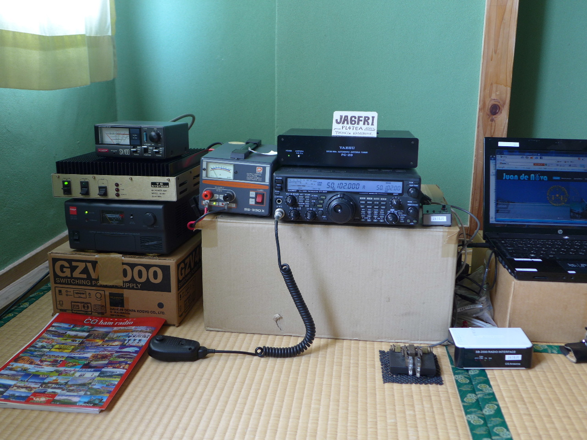
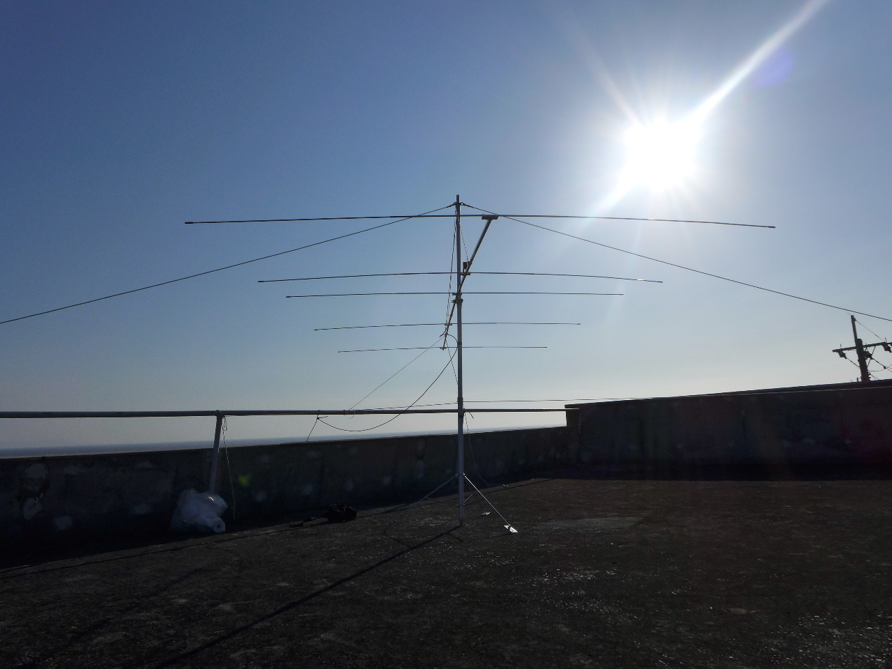
2016年4月07-14日に鹿児島県与論島から運用したJA6FRI
Report from JA6FRI(PL46ea) 07.Apr.2016(15:00b) ◎本日午後、鹿児島県大島郡与論島からJA6FRI(200W・固定局)の運用を開始 Report from JA1RJU(PM95sq) 06.Apr.2016(15:00b) Report from JA1RJU(PM95sq) 05.Apr.2016(15:00b) Report from JA1RJU(PM95sq) 04.Apr.2016(15:00b) Report from JA1RJU(PM95sq) 03.Apr.2016(15:00c) V73SIX/B 05:40- 50.011.7 CW Beacon Report from JA1RJU(PM95sq) 02.Apr.2016(15:00b) VK4RHT/b 04:20- 50.281 CW Beacon VK4RTL/b 04:20- 50.282 CW Beacon VK4TVL/b 04:25- 50.295 CW Beacon Report from JA1RJU(PM95sq) 01.Apr.2016(15:00c) VK4BLK 04:50 50.276+0.172 WSJT JT65a CQ -23dB VK4BLK 05:04 50.276+0.172 WSJT JT65a CQ -20dB
[Back Issues Mar.2016] TIME:UTC(JST-09:00) Report from JA1RJU(PM95sq) 31.Mar.2016(15:00b) VK4RTL/b 03:45- 50.282 CW Beacon VK4BLK 03:51 50.276+0.616 WSJT JT65a -07dB with JA1 VK4QG 03:58 50.276+0.616 WSJT JT65a -10dB with JA1 VK4RHT/b 04:20- 50.281 CW Beacon V73NS 06:00 50.105 CW CQ CQ V73SIX/B 06:00- 50.011.7 CW Beacon RST599 VK8RAS/b 06:00- 50.045.7 CW Beacon VK4UH 06:04 50.276+0.242 WSJT JT65a -03dB with JA1 VK4RHT/b 09:32- 50.281 CW Beacon Report from JA1RJU(PM95sq) 30.Mar.2016(15:00b) Report from JA1RJU(PM95sq) 29.Mar.2016(15:00d) VK4QG 04:50 50.276-0.172 WSJT JT65a (QSO JA2)-23dB VK4BLK 04:53 50.276+0.380 WSJT JT65a CQ -02dB VK4BLK 05:05 50.276+0.382 WSJT JT65a CQ -04dB VK4QG 05:07 50.276-0.042 WSJT JT65a CQ -02dB VK4RTL/b 05:14- 50.282 CW Beacon VK4RSC/b 05:15- 50.284 CW Beacon VK4BLK 05:18 50.276+0.170 WSJT JT65a CQ -00dB strong! VK4BLK 05:36 50.276+0.616 WSJT JT65a -06dB VK4ZB 05:37 50.276+0.040 WSJT JT65a -08db Report from JA1RJU(PM95sq) 28.Mar.2016(15:00c) VK6KXW 06:03 50.276+0.568 WSJT JT65a CQ -21dB Report from JA1RJU(PM95sq) 27.Mar.2016(15:00d) VK4BLK 04:56 50.276+0.223 WSJT JT65a CQ -05dB VK4BLK 05:06 50.276+0.223 WSJT JT65a CQ -01dB VK4BLK 05:19 50.276-0.336 WSJT JT65a -03dB VK6DF 05:29 50.276-0.336 WSJT JT65a -06dB VK6DF 05:47 50.276-0.140 WSJT JT65a -06dB VK4CZ 05:50 50.276-0.140 WSJT JT65a -17dB VK4CZ 05:52 50.276-0.040 WSJT JT65a -15dB VK4BLK 05:58 50.276+0.293 WSJT JT65a -06dB VK6RSX/b 06:00- 50.304 CW Beacon RST599 VK4EK 06:04 50.110 CW VK8RAS/b 06:05- 50.045.7 CW Beacon VK6HV 06:08 50.276-0.229 WSJT JT65a -04dB VK6HV 06:12 50.276-0.229 WSJT JT65a -01dB VK6HV 06:14 50.276 WSJT @ JT65a -02dB/-03dB (QSO=20W) VK4BLK 06:29 50.176+0.377 WSJT JT65a -06dB VK6HV 06:47 50.276+0.471 WSJT JT65a -06dB Report from JA1RJU(PM95sq) 26.Mar.2016(15:00d) DU7/PA0HIP 08:48 50.105 CW/SSB QSO with 8J290Y/2 BG6CJR 08:54 50.105 CW QSO with DU7/PA0HIP DU1EV/B 08:55- 50.007.8 CW Beacon RST599 BG6CJR 08:59 50.110 CW CQ CQ DU7/PA0HIP 09:23 50.110 CW CQ Report from JA1RJU(PM95sq) 25.Mar.2016(15:00e) VK4RTL/b 05:45- 50.282 CW Beacon weak VK6IQ 06:01 50.110 SSB CQ VK6ZFG 06:02 50.110 SSB CQ VK6ZFG 06:14 50.110 SSB @ Igor RS59 VK6IQ 06:16 50.110 SSB @ Glen RS59/57 VK6RSX/b 06:19- 50.304 CW Beacon RST599 VK8RAS/b 06:20- 50.045.7 CW Beacon VK6KXW 06:25 50.276 WSJT JT65a -06dB VK6KXW 06:33 50.276 WSJT JT65a CQ -08dB VK6AKT 06:35 50.110 SSB CQ VK6RSX/b 07:10- 50.304 CW Beacon VK6KXW 07:19 50.276.44 WSJT JT65a -17dB DU1EV/B 07:38- 50.007.8 CW Beacon RST599 DU7/PA0HIP 07:50 50.105 CW CQ CQ RST599+ Report from JA1RJU(PM95sq) 24.Mar.2016(15:00d) V73SIX/B 05:10- 50.011.7 CW Beacon T88IR 05:33 50.110 CW CQ weak yet into PM95 V73NS 05:57 50.105 CW CQ Report from JA1RJU(PM95sq) 23.Mar.2016(15:00d) VK8RAS/b 06:44- 50.045.7 CW Beacon DU7/PA0HIP 08:15 50.105 CW CQ T88IR 08:16 50.120 CW UP T88IR 08:19 50.120 CW @ RST599+ (OP/QSL JF1DIR) DU1EV/B 08:20- 50.007.8 CW Beacon DU7/PA0HIP 08:40 50.122 CW Calling T88IR T88IR 08:50 50.120 SSB Signal is down. Report from JA1RJU(PM95sq) 22.Mar.2016(15:00b) Report from JA1RJU(PM95sq) 21.Mar.2016(15:00c) VK4AFL 04:37 50.110 SSB CQ RS59 VK4AFL 04:38 50.177 SSB @ VK4WYN 04:41 50.105 CW RST599 Report from JA1RJU(PM95sq) 20.Mar.2016(15:00b) Report from JA1RJU(PM95sq) 19.Mar.2016(15:00b) Report from JA1RJU(PM95sq) 18.Mar.2016(15:00d) A31MM 03:00 50.080 RTTY QRV info from A31MM A31MM 03:15-30 50.080 RTTY UP1 JA1-JA6 A31MM 03:40-04:05 50.110/120 SSB UP3 A31MM 04:50 50.550 AM into JA6 KH6SX 04:36 50.110 CW into JA1 V73SIX/B 04:40- 50.011.7 CW Beacon into JA6 VK4RHT/b 05:30- 50.281 CW Beacon RST599 VK4RTL/b 05:30- 50.282 CW Beacon VK6RSX/b 05:30- 50.304 CW Beacon Report from JA1RJU(PM95sq) 17.Mar.2016(15:00b) Report from JA1RJU(PM95sq) 16.Mar.2016(15:00d) A31MM 04:15 50.100 CW VK4WDM 05:50 50.110/130 SSB CQ QSY UP VK4RHT/b 05:30- 50.281 CW Beacon RST599 VK4RTL/b 05:30- 50.282 CW Beacon VK4TVL/b 05:30- 50.294.5 CW Beacon VK4EK 06:05 50.110/140 SSB Report from JA1RJU(PM95sq) 15.Mar.2016(15:00c) VK4WTN 06:48 50.276.-0.269 WSJT JT65a CQ -06dB VK4WTN 06:54 50.276 WSJT @ JT65a -01dB/-04dB(QSO=20W) VK4WTN 07:28 50.110 CW CQ VK4RTL/b 07:29- 50.282 CW Beacon VK4TVL/b 07:29- 50.294.5 CW Beacon VK6RSX/b 07:30- 50.304 CW Beacon V73NS 08:05 50.105 CW CQ CQ V73SIX/B 08:05- 50.011.7 CW Beacon V73NS 08:10 50.105 CW @ RST579/559 Report from JA1RJU(PM95sq) 14.Mar.2016(15:00e) VK4RTL/b 05:10- 50.282 CW Beacon VK4TVL/b 05:10- 50.295 CW VK3OER 06:08 50.276-0.436 WSJT JT65a CQ -19dB VK3ZAZ 06:17 50.276+0.210 WSJT JT65a CQ -05dB VK3ZAZ 06:29 50.276 WSJT @ JT65a -09dB/-03dB(QSO=20W) VK3ZAZ 06:53 50.276+0.153 WSJT JT65a CQ -06dB DU1EV/B 07:00- 50.008 CW RST599+ VK3ZAZ 07:07 50.276+0.199 WSJT JT65a CQ -04dB VK3OER 07:14 50.105 CW CQ RST599 VK3ZAZ 07:23 50.276+0.199 WSJT JT65a -04dB DU1EV/B 07:55- 50.008 CW RST599+ Report from JA1RJU(PM95sq) 13.Mar.2016(15:00c) VK4UH 04:29 50.276 WSJT JT65a CQ -16dB VK4UH 04:54 50.276 WSJT JT65a -22dB VK4UH 05:23 50.276 WSJT JT65a -05dB VK6RSX/b 05:26- 50.304 CW Beacon VK6DF 05:28 50.276.-0.345 WSJT JT65a CQ -05dB VK4UH 05:45 50.276.-0.248 WSJT JT65a CQ -07dB VK6DF 05:57 50.276.-0.549 WSJT JT65a CQ -07dB VK6DF 06:05 50.275.5 WSJT @ JT65a -07dB/-05dB (QSO=20W) VK6DF 06:21 50.276 WSJT JT65a CQ -07dB Report from JA1RJU(PM95sq) 12.Mar.2016(15:00d) LU5FF 00:50 50.110/105 CW CQ into JA4 (1st SA Open!) LU5FF 00:50 50.105 CW CQ JA Report from LU5FF LU5FF 00:55 50.105/110 CW into JA2/3/4 A31MM 05:30 50.100 CW into JA6 UP1 A31MM 05:45 50.100 CW into JA1 A31MM 05:47 50.100 CW @ UP1 RST599 OP=JA6WFM (QSL via EA5GL) A31MM 06:05 50.120 SSB CQ UP5 into JA4/6 Report from JA1RJU(PM95sq) 11.Mar.2016(15:00b) VK6RSX/b 05:57- 50.304 CW Beacon Report from JA1RJU(PM95sq) 10.Mar.2016(15:00b) Report from JA1RJU(PM95sq) 09.Mar.2016(15:00c) V73SIX/B 02:19- 50.011.7 CW Beacon weak V73SIX/B 03:10- 50.011.7 CW Beacon RST599 Report from JA1RJU(PM95sq) 08.Mar.2016(15:00b) Report from JA1RJU(PM95sq) 07.Mar.2016(15:00b) Report from JA1RJU(PM95sq) 06.Mar.2016(15:00b) Report from JA1RJU(PM95sq) 05.Mar.2016(15:00d) FK8SIX/B 05:00- 50.080.2 CW Beacon(FSK) VK4CZ 05:12 50.110 SSB CQ VK4UH 05:29 50.276-0.147 WSJT JT65a CQ -09dB VK4RTH/b 05:33- 50.281 CW Beacon VK4RTL/b 05:33- 50.282 CW Beacon VK4KSY 05:58 50.135 SSB RS59 VK4FP 06:03 50.150 SSB RS59+ Report from JA1RJU(PM95sq) 04.Mar.2016(15:00c) VK4WTN 04:00 50.110/105 CW CQ VK7DX 04:50 50.110 SSB VK4EK 05:50 50.110 SSB VK4ZJB 06:05 50.110 SSB VK6RSX/b 06:45- 50.304 - CW Beacon Report from JA1RJU(PM95sq) 03.Mar.2016(15:00b) Report from JA1RJU(PM95sq) 02.Mar.2016(15:00b) Report from JA1RJU(PM95sq) 01.Mar.2016(15:00d) VK4WTN 03:52 50.110 CW CQ VK4AHW 03:53 50.110 SSB VK4TL 03:53 50.110 SSB VK2RHN/b 03:55- 50.288 CW Beacon VK4WTN 03:56- 50.105 CW CQ VK4ZB 03:57 50.276-0.164 WSJT JT65a -03dB VK4QG 04:00 50.276+0.568 WSJT JT65a -05dB VK4ZB 04:02 50.276-0.164 WSJT JT65a -07dB FK8SIX/B 04:13- 50.080 CW Beacon VK4QG 04:17 50.276 WSJT @ JT65a -01dB/-06dB (QSO=20W) VK4EK 04:20 50.110 SSB RS59 VK4QG 04:23 50.276+0.487 WSJT JT65a -05dB
[Back Issues Feb.2016] TIME:UTC(JST-09:00) Report from JA1RJU(PM95sq) 29.Feb.2016(15:00e) VK4RTL/b 05:55- 50.282 CW Beacon RST599 VK4AHW 05:59 50.110 SSB CQ VK4ZJB 06:07 50.110/130 SSB CQ QSY UP VK4EK 06:25 50.110 SSB CQ VK4RHT/b 06:28- 50.281 CW Beacon RST599 VK4RTL/b 06:28- 50.282 CW Beacon RST599 VK4TVL/b 06:28- 50.294.5- CW Beacon VK8RAS/b 06:35- 50.045.7 CW Beacon VK4RHT/b 07:25- 50.281 CW Beacon RST599 VK4RTL/b 07:25- 50.282 CW Beacon RST599 VK6RSX/b 07:27- 50.304 - CW Beacon Report from JA1RJU(PM95sq) 28.Feb.2016(15:00c) FK8SIX/b 05:58- 50.080.22 CW Beacon FK8CP 06:00 50.110 CW RST599 VK4CZ 06:16 50.110/145 SSB RS59 Report from JA1RJU(PM95sq) 27.Feb.2016(15:00d) VK4WTN 05:10 50.120 CW VK4RHT/b 05:10- 50.281 CW Beacon RST599 VK4RTL/b 05:10- 50.282 CW Beacon RST599 VK4WTN 05:16 50.105 CW FK8CP 07:23 50.110 CW CQ Report from JA1RJU(PM95sq) 26.Feb.2016(15:00d) VK4WTN 05:35 50.105 CW CQ VK4EK 06:02 50.110 SSB CQ VK8RAS/b 06:07- 50.045.7 CW Beacon Report from JA1RJU(PM95sq) 25.Feb.2016(15:00d) FK8IK 05:25 50.115 CW RST599 FK8SIX/b 05:25- 50.088 CW Beacon VK4WTN 05:25 50.105 CW CQ VK4AHW 05:26 50.110 SSB VK4AMG 05:32 50.110 CW CQ VK4AMG 05:38 50.111 CW VK4RO 06:03 50.110 CW CQ VK4RTL/b 06:08- 50.282.1 CW Beacon Report from JA1RJU(PM95sq) 24.Feb.2016(15:00b) Report from JA1RJU(PM95sq) 23.Feb.2016(15:00c) VK4EK 05:28 50.110 SSB RS59 VK4WTN 05:30 50.105 CW CQ V63DX 05:32 50.110 CW CQ V63DX 05:34 50.110 CW @ RST599/599 FK8IK 05:35 50.115 CW RST599 FK8SIX/b 05:37- 50.080.2 CW Beacon VK4VN 05:41 50.110/170 SSB CQ QSY UP VK4MA 05:43 50.110 CW QSO with V63DX VK4AJJ 05:44 50.110 CW QSO with V63DX VK5XDX 05:47 50.110 CW CQ FK8IK 05:48 50.115 CW CQ UP1 VK4MA 05:52 50.110 SSB CQ Pacific Report from JA1RJU(PM95sq) 22.Feb.2016(15:00b) Report from JA1RJU(PM95sq) 21.Feb.2016(15:00g) VK4QG 04:41 50.275.577 WSJT JT65a -11dB VK4QG 04:44 50.275.733 WSJT JT65a -08dB VK4YH 05:09 50.110/120 SSB CQ QSY VK4UH 05:10 50.130 SSB RS59++ VK4RTL/b 05:10- 50.282 CW Beacon RST599 VK8RAS/b 05:13- 50.045.7 CW Beacon VK4WTN 05:15 50.145 SSB RS59 VK4ZB 05:16 50.275.466 WSJT JT65a -06dB CQ VK4ZB 05:22 50.275.422 WSJT JT65a -07dB VK4ZB 05:26 50.274.5 WSJT JT65a -12dB VK4ZB 05:28 50.276.019 WSJT JT65a -08dB CQ VK4ZB 05:37 50.276 WSJT @ JT65a -06dB/-01dB (20W out) VK4UH 05:50 50.130 SSB still RS59+ VK4RTL/b 05:51- 50.282 CW Beacon V73SIX/B 05:57- 50.011.7 CW Beacon VK8RAS/b 06:00- 50.045.7 CW Beacon still into JA1 VK4ZB 06:06 50.276.038 WSJT JT65a CQ -13dB VK4ZB 06:20 50.275.248 WSJT JT65a -08dB DU7/PA0HIP 07:30 50.105 CW RST599 DU1EV/B 07:30- 50.008 CW Beacon RST599 KG6JDX 08:03 50.110 SSB RS59+ KG6DX 08:05 50.103 CW RST599++ AH2G/B 08:20- 50.004.5 CW Beacon(KG6DX) VK8VF/b 12:30- 50.310 CW Beacon VK6RSX/b 12:38- 50.304 CW Beacon VK4RHT/b 12:42- 50.281 CW Beacon Report from JA1RJU(PM95sq) 20.Feb.2016(15:00c) VK5BC 05:30 50.276.032 WSJT JT65a CQ -17dB (PF95) VK5BC 06:11 50.276.415 WSJT JT65a CQ -18dB (PF95) VK5BC 06:27 50.276.260 WSJT JT65a CQ -13dB (PF95) VK8VF/b 07:50- 50.310 CW Beacon VK4RHT/b 07:50- 50.281 CW Beacon Report from JA1RJU(PM95sq) 19.Feb.2016(15:00b) "Green Color Report from DXSCAP" V73SIX/B- 03:41-03:58 50.011.4 CW Beacon Report from JA7/8/1 VK4VN 04:07 50.160 SSB into JA1/8 59++ VK4BG 04:09 50.190.0 SSB into JA1 RS59 VK5XDX 04:11 50.110.7 CW into JA5 RST559 V73SIX/B 04:12- 50.011.6 CW Beacon into JA8 VK4WTN 04:17 50.110.0 CW into JA2 VK4ZJB 04:19 50.110.0 SSB into JA8 RS59 VK2RHV/b 04:24- 50.288.0 CW Beacon into JA8 VK4EK 04:26 50.110.0 SSB into JA1 VK4RTL 04:44- 50.282.1 CW Beacon into JA5(Townsville) VK4RGG/b 04:51- 50.057.7 CW Beacon into JA3 RST579 3D2AG 05:15-06:11 50.115.0 CW Report from JA1/2/3/5/6/7 RST599 VK4CRO 06:13 50.110 SSB intoJA5 3D2AG 06:16 50.115 CW CQ into JA1 VK4HJ 06:29 50.110 SSB into JA5 VR2SIX/b 07:27- 50.075 CW Beacon into JA6 DU7/PA0HIP 07:55 50.110 CW CQ DU7/PA0HIP 08:02 50.110 CW CQ Report from JA1RJU(PM95sq) 18.Feb.2016(15:00c) "Green Color Report from DXSCAP" ZL1AKW 05:21 50.110 CW into JA1 ZL2WHO/B 06:12- 50.024 CW Beacon into JA2 ZL1AKW 06:17 50.110.7 CW CQ into JA5 DU1EV/B 07:05- 50.008 CW Beacon into JA3 VK8RAS/b 07:06- 50.045.6 CW Beacon into JA3 KG6DX 07:24 50.105 CW into JA5 RST599 V73SIX/B 07:27 50.011.7 CW Beacon into JA5 RST539 ZL2WHO/B 07:27 50.024 CW Beacon into JA3 RST579 DU7/PA0HIP 07:33 50.100.9 CW into JA9 RST 599 KG6DX 07:38 50.104.9 CW into JA6 RST 599 DU7/PA0HIP 07:39- 50.100/110.0 CW into JA1/4/7 VK6RSX 08:50- 50.304 CW Beacon into JA2 Report from JA1RJU(PM95sq) 17.Feb.2016(15:00c) VK4WTN 05:22 50.105 CW CQ VK4WTN 05:25 50.105 CW @ Wayn RST599 VK4RTL/b 05:27- 50.282 CW Beacon VK2RHV/b 05:27- 50.288 CW Beacon "Green Color Report from DXSCAP" 3D2AG 05:48 50.115 CW into JA5 3D2AG 05:54 50.115 CW into JA3 Report from JA1RJU(PM95sq) 16.Feb.2016(15:00b) Report from JA1RJU(PM95sq) 15.Feb.2016(15:00b) Report from JA1RJU(PM95sq) 14.Feb.2016(15:00c)
◎日本本土を通過した低気圧で、関東地方でも未明から強風が吹き荒れた。東京都心でも風速28m以上を記録し、 気温も夏日一歩手前の24度まで上昇した。気象庁は、九州と東北以北を除く全国に「春一番」が吹いたと発表した。
昨日は短時間ながらVK'sが入感したが、オープンのエリアは狭く短時間だった。Report from JA1RJU(PM95sq) 13.Feb.2016(15:00c) VK4ZJB 05:04 50.110 SSB CQ Report from JA1RJU(PM95sq) 12.Feb.2016(15:00b) Report from JA1RJU(PM95sq) 11.Feb.2016(15:00b) Report from JA1RJU(PM95sq) 10.Feb.2016(15:00b) Report from JA1RJU(PM95sq) 09.Feb.2016(15:00b) Report from JA1RJU(PM95sq) 08.Feb.2016(15:00b)Report from JA1RJU(PM95sq) 07.Feb.2016(15:00b) Report from JA1RJU(PM95sq) 06.Feb.2016(15:00b)
◎ VP8/DX-Peditionは2/7日で全てQRT。
Past night they have a big storm and VP8SGI members went back to Braveheart for security reasons. Everybodyis OK and now, they are waiting a weather change to dismount and pack everything. Last log file will be uploaded from Stanley, Falkland Is. VP8SGI now is QRT. EA5RM - VP8STI/VP8SGI Chief Pilot
73 Col MM0NDX DX-World.net
◎ VP8STI(South Sandwich Islands)の運用では嵐に遭遇、キャンプのテントが飛ばされる被害が出るなど心配されたVP8のグループだが、 無事に機材も撤収、急遽、予定を繰り上げ1/30日から、次の運用地のSouth GeorgiaからVP8SGIでQRVを始めていた。
運用も8日目となる月曜日(現地時間)にはQRTを予定している。HF帯での入感状況は先のVP8STIよりも良く、JAsからも10m/160mバンドを除きQSO出来ている(6日現在)。
VP8STIでの6mの運用(周波数：50.110MHz)も注目されていたが、VP8STI/VP8SGIのChief PilotのCol MM0NDXを通じて、 リーダーのN6PSE(Paul)から伝えられた情報によると、最後のチャンスに、6mバンドでも初QSOを目指し電波を出すとの事。
Paul will try to do first six meters QSO during their afternoon and evening time. Take a look to my spots on DX Cluster, he will call me by Sat phone few minutes before start to call on 50.110 Khz.
しかし、現在の伝搬状況から判断して残る時間内での6mのオープンの望みは薄い？が、 たとえQSOが"ゼロ"だったとしても、条件の悪い極地からのDX-Peditionで”6mを運用した”という実績を残すだけでも十分評価に値する。Report from JA1RJU(PM95sq) 05.Feb.2016(15:00c) (ZL2WHO/B 05:12 50.024 SSB into JA2) (VK4ZJB 06:31 50.110 SSB into JA2) (ZL1VHF 03:33- 50.043 CW into JA2) ZL2WHO/B 06:45- 50.024 CW Beacon RST569 (ZL1AKW 06:45 50.100 CW into JA3) (ZL1AKW 06:59 50.110 CW into JA5) (VK5XDX 07:10 50.110 SSB into JA5)
◎久しぶりにZL/VKが入感した。関東地方でもZL2WHO/Bが短時間ながら聞こえていたが、50.280-300MHz付近のVKのBeaconは、 東京西部(PM95)では確認出来なかった。
南半球は今が夏の時期で、VK同士のQSOは頻繁にクラスターにリポートが上がっていても、 年末から年始に掛けてのTEPによるJAへの伝搬は例年よりも少なかった。 暦の上では今日が"立春"だが、春のDXシーズンにはまだ早い。Report from JA1RJU(PM95sq) 04.Feb.2016(15:00b) Report from JA1RJU(PM95sq) 03.Feb.2016(15:00b) Report from JA1RJU(PM95sq) 02.Feb.2016(15:00b) Report from JA1RJU(PM95sq) 01.Feb.2016(15:00b)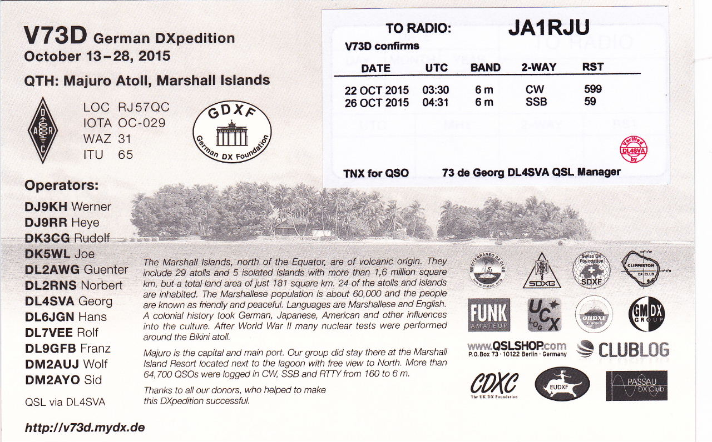
2015年10月にドイツのグループにより運用されたV73DのQSL
[Back Issues Jan.2016] TIME:UTC(JST-09:00) Report from JA1RJU(PM95sq) 31.Jan.2016(15:00b) Report from JA1RJU(PM95sq) 30.Jan.2016(15:00b) Report from JA1RJU(PM95sq) 29.Jan.2016(15:00b) Report from JA1RJU(PM95sq) 28.Jan.2016(15:00b) Report from JA1RJU(PM95sq) 27.Jan.2016(15:00b)
◎ HF帯で1月12日からアクティブに運用していたK5P(Palmyra Atoll)のDX-Peditionは、75,210 QSOsの成果を挙げ、1月26日に終了した。
6m（50.106MHz）の運用も予定されていたが、残念ながらQSOは”ゼロ”に終わった。
この時期の運用は、太平洋の”近場”とは言え難しいパスだった。◎JAからの伝搬はHF帯でも難しいVP8STI(South Sandwich Islands)も1月17日から運用が開始されていたが、 1月24日に、嵐(風速112km！)に遭遇、一行がキャンプしていたテントの2張りが飛ばされる被害が出たため、 OP全員が全ての機器と個人の所有物を島に置いたまま、乗船してきた船(ブレーブハート号)に緊急避難した。
結局、天候の回復を待ったが、予定を繰り上げ1月26日にVP8STIはQRTする事になった。 設備の回収が行われたら、次の運用地に予定されている南ジョージア島(VP8SGI)に向かうかどうか決定すると。
VP8STIは、この時期のDX-Peditionとしては珍しく、6mのアンテナ(4EL)を準備して乗り込み、50.110MHzで電波を出した直後のアクシデントだった。Report from JA1RJU(PM95sq) 26.Jan.2016(15:00b) Report from JA1RJU(PM95sq) 25.Jan.2016(15:00b) Report from JA1RJU(PM95sq) 24.Jan.2016(15:00b) Report from JA1RJU(PM95sq) 23.Jan.2016(15:00b) Report from JA1RJU(PM95sq) 22.Jan.2016(15:00b) Report from JA1RJU(PM95sq) 21.Jan.2016(15:00b) Report from JA1RJU(PM95sq) 20.Jan.2016(15:00b) Report from JA1RJU(PM95sq) 19.Jan.2016(15:00ｂ) Report from JA1RJU(PM95sq) 18.Jan.2016(15:00b)
◎この冬初めての大雪となった関東地方。 昨夜遅くから降り出した雪は、都心部では未明に6cm程度の降雪となった。降雪に弱い首都圏の交通網は、早朝からマヒ状態となり大混乱となった。
東京都西部では、深夜に本格的な降雪となり”ベタ雪”の重い雪がアンテナに張り付いて、6mのロングブームやエレメントの破損が心配されたが、 明け方になって雪から雨に変わったため、幸い目だったダメージは無かった。 大雪を降らせた"爆弾"低気圧は、北上して東北、北海道で発達すると予想されているため、明日は関東地方沿岸でも強風が吹き荒れる恐れもある。Report from JA1RJU(PM95sq) 17.Jan.2016(15:00b) Report from JA1RJU(PM95sq) 16.Jan.2016(15:00c)
◎ ◎K5P((Palmyra Atoll)) Update: 16-Jan @ 2100z........
The 6M beacon is set on 50.106 MHz.....any busted calls or corrections will be made AFTER the DXpedition ends.....we are continuing to focus on Europe on all bands.....the % of EU QSOs has increased from 6% to 9% of our total over the last 48 hours.....please read this list of guidelines....... K5PReport from JA1RJU(PM95sq) 15.Jan.2016(15:00d) VK4WTN 02:55 50.110.0 SSB into JA8 RS41 VK2BXT 03:20 50.120.0 SSB into JA8 RS53/55 VK3BFH 03:31 50.125.0 SSB into JA8 RS51 VK4RHT/b 03:54 50.281.0 CW Beacon into JA8 V73SIX/B 04:07- 50.0117 CW Beacon into JA1 RST599 VK4WTN 04:08 50.110.7 CW into JA8 VK4ZJB 04:15 50.110.0 CW into JA8 VK4WTN 04:14 50.110.7 SSB into JA8
◎ 例年ならば、年末、年始には6mでのVK/ZLの入感も期待出来ていたのだが、2015年-2016年に掛けての6mバンドは全く静かな状態に終わっていた。
こんな中、今日は久しぶりにJA8からVK2/3/4の入感がリポートされたが、残念ながらJA1(PM95)ではV73SIX/Bの信号が強力に聞こえていた程度で、 VKの入感は全くなく、今日のVKとのQSOは”幻”に終わった。
現在HF帯を賑わしているK5P(Palmyra Atoll)のDX-Peditionは、アクティブに運用しているものの、HF帯のハイバンドの信号は予想していたよりも弱く、このコンデションでは6mのオープンの可能性はかなり難しいのではないかと懸念されている。K5Pの運用は1月25日までの予定。
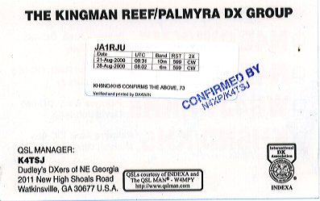
1990年にJavis IsからQRVしたAH3C/KH5Jが1St-Palmyra Atollとの初6m-QSO
Palmyra AtollからアクティブにQRVしていたKH6ND/KH5(Michael)
Report from JA1RJU(PM95sq) 14.Jan.2016(15:00b) Report from JA1RJU(PM95sq) 13.Jan.2016(15:00b) Report from JA1RJU(PM95sq) 12.Jan.2016(15:00b) Report from JA1RJU(PM95sq) 11.Jan.2016(15:00b) Report from JA1RJU(PM95sq) 10.Jan.2016(15:00b) Report from JA1RJU(PM95sq) 09.Jan.2016(15:00b) Report from JA1RJU(PM95sq) 08.Jan.2016(15:00b) Report from JA1RJU(PM95sq) 07.Jan.2016(15:00b) Report from JA1RJU(PM95sq) 06.Jan.2016(15:00b) Report from JA1RJU(PM95sq) 05.Jan.2016(15:00b) Report from JA1RJU(PM95sq) 04.Jan.2016(15:00b) Report from JA1RJU(PM95sq) 03.Jan.2016(15:00b) 2016 New Year Party Report from JA1RJU(PM95sq) 02.Jan.2016(15:00b) 2016 New Year Party Report from JA1RJU(PM95sq) 01.Jan.2016(15:00b) Wishing you all and your families a happy and healthy 2016

2016年01.Jan-31.Dec
Back Issues Back Issues Back Issues Back Issues Dec.01-31.2016 Nov.01-30.2016 Oct.01-31.2016 Sep.01-30.2016 Aug.01-31.2016 Jul.01-31.2016 Jun.01-30.2016 May.01-31.2016 Apr.01-30.2016 Mar.01-31.2016 Feb.01-28.2016 Jan.01-31.2016